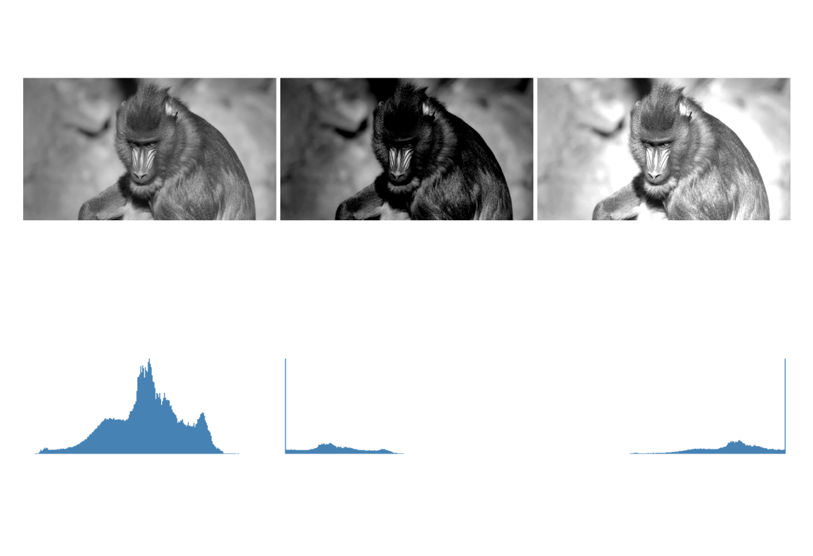
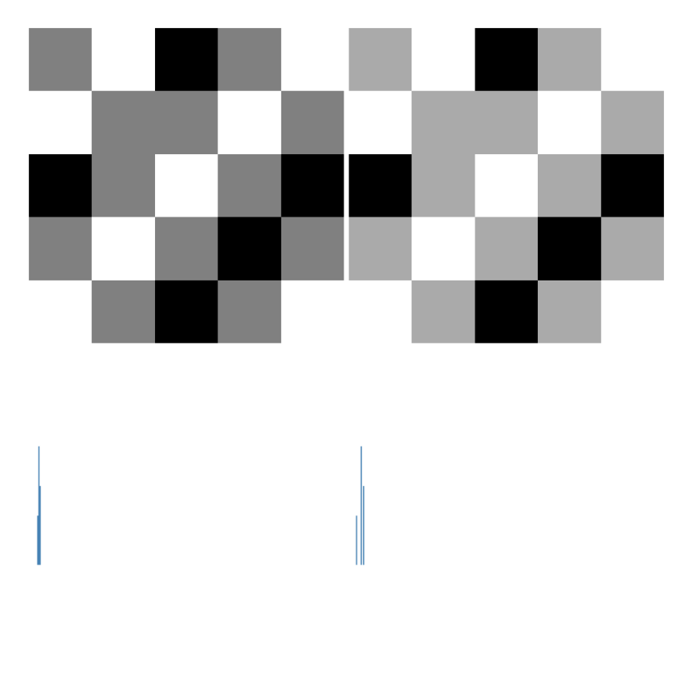
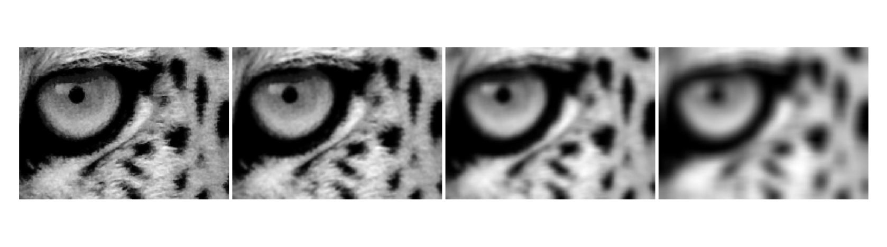
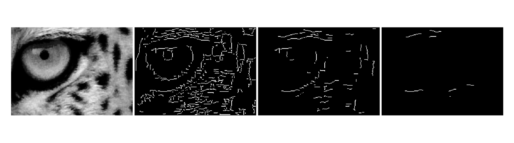

3Operazioni Spaziali: Intensità, Istogramma e Filtraggio
Questo capitolo approfondisce l’elaborazione delle immagini nel dominio spaziale, partendo dalla manipolazione diretta dei pixel e degli istogrammi per l’enfatizzazione del contrasto, fino all’applicazione di filtri locali tramite convoluzione per la smussatura, la riduzione del rumore e il rilevamento dei bordi. L’obiettivo è sviluppare l’intuizione matematica e computazionale alla base di gran parte degli algoritmi moderni della Visione Artificiale.
3.1 Obiettivi
Al termine di questo capitolo, sarai in grado di:
Gestire intensità e pixel: Eseguire operazioni aritmetiche sature (mm::addm, mm::subm) e logiche bit a bit (mm::band, mm::bor, mm::bnot) per la combinazione e la selezione di regioni di interesse (ROI), e applicare l’alpha blending (mm::blend) per la fusione ponderata di immagini;
Elaborare istogrammi: Interpretare l’istogramma come diagnosi tonale e applicare l’equalizzazione globale tramite CDF (mm::equalize); nel percorso Python, anche l’equalizzazione adattiva (CLAHE) e la specifica dell’istogramma per il trasferimento del profilo tonale tra immagini;
Comprendere i fondamenti spaziali: Capire il concetto di vicinato, il padding dei bordi (mm::pad) e la differenza tra correlazione incrociata (mm::conv) e convoluzione — inclusa la ragione per cui kernel asimmetrici come quello di Sobel producono risultati diversi nelle due operazioni;
Applicare il filtraggio di smoothing: Usare il filtro della media (mm::blur, oppure mm::conv con kernel uniforme) e il filtro Gaussiano (mm::gaussian) per la riduzione del rumore, comprendendo il vantaggio della ponderazione radiale e della separabilità Gaussiana;
Applicare il filtraggio di enhancement: Usare il Laplaciano \(w_4\) e \(w_8\) (mm::laplacian) per l’accentuazione isotropica dei bordi, l’operatore di Sobel (mm::sobel) per la magnitudine del gradiente — e, nel percorso Python, la decomposizione direzionale \(G_x\), \(G_y\) e l’angolo —, e l’Unsharp Masking (mm::usm) per l’amplificazione delle alte frequenze controllata dal parametro \(k\);
Utilizzare filtri d’ordine: Applicare il filtro mediano (mm::median) per la rimozione del rumore sale e pepe, comprendendo perché la sua natura non lineare e la robustezza agli outlier lo rendano superiore ai filtri lineari in questo scenario;
Risolvere problemi pratici: Combinare tecniche in pipeline di pre-processing (equalizzazione → Gaussiano → Canny; con CLAHE al posto dell’equalizzazione nel percorso Python) e utilizzare le funzioni di morph (mm::conv, mm::histImg, mm::equalize, mm::drawImgKernel) per l’analisi e la visualizzazione didattica di ogni fase.
3.2 Operazioni a Livello di Intensità
Il livello più elementare di elaborazione delle immagini agisce direttamente sui valori dei pixel, senza considerare il vicinato. Queste operazioni — chiamate trasformazioni puntuali (point operations) — sono le più veloci dal punto di vista computazionale e costituiscono la base per tecniche più complesse.
Formalmente, una trasformazione puntuale può essere descritta come:
\[
g(x,y) = T[f(x,y)]
\tag{3.1}\]
dove \(f(x,y)\) è l’immagine di ingresso, \(g(x,y)\) è l’uscita e \(T\) è una funzione applicata a ciascun pixel individualmente.
3.2.1 Preparazione dell’Ambiente Pratico
Il blocco seguente carica la libreria morph dal repository (il modulo morph.py e, nel percorso C++, anche la morph.hpp utilizzata nel #include delle celle compilate).
import os, urllib.requestos.makedirs("tmp/state", exist_ok=True) # artefatti di build del percorso C++ (.cpp, binario, PNG)url ="https://raw.githubusercontent.com/fzampirolli/pdi-vc/master/morph/config.py"ifnot os.path.exists("config.py"): urllib.request.urlretrieve(url, "config.py")# Il kernel è Python anche nel percorso C++: `mm` (morph.py) viene usato dai# simulatori, dalla visualizzazione delle figure che il binario C++ genera e dallo# stato mm::Image tra le celle. cpp=True scarica anche il percorso compilato# (morph.hpp + stb_image*.h), usato nell'#include delle celle %%writefile *.cpp.import configconfig.setup(cpp=True)from morph import mmimport numpy as np
✅ Ambiente pronto. Morph: 1.1.9 | OpenCV: 5.0.0
Come oggetto di studio lungo questo capitolo, utilizzeremo le immagini di vita selvatica presentate nelle Figura 3.1 e Figura 3.3. A partire da esse, esploreremo operazioni spaziali sull’intensità, istogrammi e filtraggio, analizzando i loro effetti sull’amplificazione, sulla levigatura, sulla riduzione del rumore e sulla rilevazione dei bordi, in modo da comprendere i fondamenti matematici e computazionali dell’elaborazione digitale delle immagini (PDI).
%%writefile tmp/fig_03_mandrill.cpp#define MM_OUT "tmp/fig_03_mandrill.png"//| label: fig-03-mandrill//| fig-cap: "*Mandrill* (*Mandrillus sphinx*) fotografado em ambiente natural na África do Sul. Crédito: Carlos Guilherme Rodrigues (CC BY-SA 3.0)."//| echo: true#include "morph.hpp"#include <iostream>#include <filesystem>int main() { std::string base ="https://upload.wikimedia.org/wikipedia/commons"; std::string arquivo ="Carlos_Guilherme_Rodrigues_%2876515283%29.jpeg"; std::string url = base +"/9/9b/"+ arquivo; mm::Image img_color = mm::read(url); mm::Image img_gray = mm::gray(img_color); mm::show(img_color, MM_OUT);// [pdi:state-io] auto-generated — do not edit by handstd::filesystem::create_directories("tmp/state");mm::write(img_gray, "tmp/state/img_gray_8.png");// [pdi:state-io:end]return0;}
Overwriting tmp/fig_03_mandrill.cpp
!g++-I. -std=c++17 tmp/fig_03_mandrill.cpp -o tmp/fig_03_mandrill \&& ./tmp/fig_03_mandrill \&& test -f "tmp/fig_03_mandrill.png"\|| echo "⚠ mm::show não gravou tmp/fig_03_mandrill.png"
try: mm.show(mm.read("tmp/fig_03_mandrill.png"))exceptExceptionas _e:print("figura indisponivel nesta trilha (C++): "+repr(_e) +" tmp/fig_03_mandrill.png (ver a versao Python)")
Figura 3.1: Mandrill (Mandrillus sphinx) fotografado em ambiente natural na África do Sul. Crédito: Carlos Guilherme Rodrigues (CC BY-SA 3.0).
3.2.2 Operazioni Aritmetiche
Le operazioni aritmetiche tra immagini sono ampiamente utilizzate nell’elaborazione digitale delle immagini (PDI) per combinare, confrontare o migliorare le informazioni. La sottrazione di immagini è particolarmente efficace per rilevare differenze tra due fotogrammi — ad esempio, nella rimozione dello sfondo statico nelle telecamere di sorveglianza:
\[
g(x,y) = f_1(x,y) - f_2(x,y)
\tag{3.2}\]
L’addizione saturata limita il risultato all’intervallo \([0, 255]\): i valori superiori a 255 vengono fissati a 255, evitando l’overflow silenzioso del tipo uint8 (es.: \(200 + 100 = 44\) anziché 300). La sottrazione saturata applica lo stesso principio sul lato inferiore: i valori negativi vengono fissati a 0.
AvvisoSaturazione e overflow
Le operazioni aritmetiche su uint8 subiscono un overflow silenzioso: \(200 + 100 = 44\) (non 300). mm::addm e mm::subm eseguono la saturazione automatica, fissando il risultato in \([0, 255]\). Il blending utilizza pesi frazionari: mm::blend opera internamente in virgola mobile e solo successivamente arrotonda e satura a uint8.
La Figura 3.2 dimostra l’addizione di una costante (schiarimento) e la sottrazione di una costante (scurimento con saturazione a 0).
%%writefile tmp/fig_03_aritmetica.cpp#define MM_OUT "tmp/fig_03_aritmetica.png"//| label: fig-03-aritmetica//| fig-cap: "Operações aritméticas saturadas: adição de constante (clareamento) e subtração de constante (escurecimento com saturação em 0)."//| echo: true//| output: true#include "morph.hpp"#include <iostream>#include <vector>#include <string>#include <filesystem>int main() {// [pdi:state-io] auto-generated — do not edit by handmm::Image img_gray = mm::_read_state("tmp/state/img_gray_8.png");// [pdi:state-io:end]int fundo =60; mm::Image img_add = mm::addm(img_gray, fundo); mm::Image img_sub = mm::subm(img_gray, fundo); mm::show( std::vector<mm::Image>{img_gray, img_add, img_sub}, MM_OUT, std::vector<std::string>{"Original", "addm (+60)", "subm (−60)"},3 );// [pdi:panel-io] auto-generated — do not edit by handstd::filesystem::create_directories("tmp");mm::write(img_gray, "tmp/fig_03_aritmetica_0.png");mm::write(img_add, "tmp/fig_03_aritmetica_1.png");mm::write(img_sub, "tmp/fig_03_aritmetica_2.png");// [pdi:panel-io:end]return0;}
Overwriting tmp/fig_03_aritmetica.cpp
!g++-I. -std=c++17 tmp/fig_03_aritmetica.cpp -o tmp/fig_03_aritmetica \&& ./tmp/fig_03_aritmetica \&& test -f "tmp/fig_03_aritmetica.png"\|| echo "⚠ mm::show não gravou tmp/fig_03_aritmetica.png"
Quando \(\alpha = 1\), si ottiene soltanto l’immagine \(f_1\); quando \(\alpha = 0\), soltanto \(f_2\). I valori intermedi producono una transizione fluida tra le due, essendo ampiamente utilizzati nella composizione di immagini, sovrapposizione di livelli, filigrane ed effetti di fusione visiva.
Affinché la combinazione produca un risultato coerente, è necessario allineare preventivamente le regioni di interesse. Nella Figura 3.4, si ritaglia il volto del leopardo con mm::crop(img_leop_gray, 250, H-300, 100, W-200) e la regione facciale del mandrillo con mm::crop(img_gray, 100, 400, 380, 530), in modo che occhi e struttura facciale risultino approssimativamente allineati. Il ritaglio del leopardo viene quindi ridimensionato (mm::resize) alle dimensioni del mandrillo prima della miscelazione.
mm::blend esegue l’operazione in virgola mobile — evitando overflow nei calcoli con pesi frazionari — e solo successivamente arrotonda e satura il risultato in uint8.
%%writefile tmp/fig_03_leopardo.cpp#define MM_OUT "tmp/fig_03_leopardo.png"// Compile: g++-std=c++17-o program program.cpp -I. -L. -lmorph `pkg-config --cflags --libs opencv4` 2>/dev/null || g++-std=c++17-o program program.cpp morph.cpp//| label: fig-03-leopardo//| fig-cap: "Retrato de um leopardo (*Panthera pardus*) em ambiente natural. Crédito: C. Brück (CC BY-SA 4.0)."//| echo: true#include "morph.hpp"#include <iostream>#include <string>#include <filesystem>int main() { std::string base ="https://upload.wikimedia.org/wikipedia/commons"; std::string arquivo ="Leopard_%28Panthera_pardus%29_portrait.jpg"; std::string url = base +"/9/92/"+ arquivo; std::string caminho ="imagens/leopardo.jpg"; mm::Image img_leop = mm::read(url); mm::Image img_leop_gray = mm::gray(img_leop); mm::show(img_leop, MM_OUT);// [pdi:state-io] auto-generated — do not edit by handstd::filesystem::create_directories("tmp/state");mm::write(img_leop, "tmp/state/img_leop_12.png");mm::write(img_leop_gray, "tmp/state/img_leop_gray_12.png");// [pdi:state-io:end]return0;}
Overwriting tmp/fig_03_leopardo.cpp
!g++-I. -std=c++17 tmp/fig_03_leopardo.cpp -o tmp/fig_03_leopardo \&& ./tmp/fig_03_leopardo \&& test -f "tmp/fig_03_leopardo.png"\|| echo "⚠ mm::show não gravou tmp/fig_03_leopardo.png"
try: mm.show(mm.read("tmp/fig_03_leopardo.png"))exceptExceptionas _e:print("figura indisponivel nesta trilha (C++): "+repr(_e) +" tmp/fig_03_leopardo.png (ver a versao Python)")
Figura 3.3: Retrato de um leopardo (Panthera pardus) em ambiente natural. Crédito: C. Brück (CC BY-SA 4.0).
%%writefile tmp/fig_03_blend.cpp#define MM_OUT "tmp/fig_03_blend.png"//| label: fig-03-blend//| fig-cap: "*Alpha blending* entre recortes alinhados de mandrill e do leopardo (@fig-03-leopardo) para diferentes valores de α. Em α=1 vê-se apenas mandrill; em α=0, apenas o leopardo; valores intermediários fundem os olhares das duas imagens proporcionalmente."//| echo: true//| output: true#include "morph.hpp"#include <vector>#include <string>int main() {// [pdi:state-io] auto-generated — do not edit by handmm::Image img_gray = mm::_read_state("tmp/state/img_gray_8.png");mm::Image img_leop_gray = mm::_read_state("tmp/state/img_leop_gray_12.png");// [pdi:state-io:end]// recortes alinhados: rosto do leopardo e região facial do mandril mm::Image leo = mm::crop(img_leop_gray, 250, img_leop_gray.h -300, 100, img_leop_gray.w -200); mm::Image mandrill = mm::crop(img_gray, 100, 400, 380, 530); mm::Image leo_r = mm::resize(leo, mandrill.w, mandrill.h, "bilinear"); mm::show( {mm::blend(mandrill, leo_r, 1.0), mm::blend(mandrill, leo_r, 0.8), mm::blend(mandrill, leo_r, 0.6), mm::blend(mandrill, leo_r, 0.4), mm::blend(mandrill, leo_r, 0.2), mm::blend(mandrill, leo_r, 0.0)}, MM_OUT, {"α=1.0", "α=0.8", "α=0.6", "α=0.4", "α=0.2", "α=0.0"},6 );return0;}
Overwriting tmp/fig_03_blend.cpp
!g++-I. -std=c++17 tmp/fig_03_blend.cpp -o tmp/fig_03_blend \&& ./tmp/fig_03_blend \&& test -f "tmp/fig_03_blend.png"\|| echo "⚠ mm::show não gravou tmp/fig_03_blend.png"
try: mm.show(mm.read("tmp/fig_03_blend.png"))exceptExceptionas _e:print("figura indisponivel nesta trilha (C++): "+repr(_e) +" tmp/fig_03_blend.png (ver a versao Python)")
Figura 3.4: Alpha blending entre recortes alinhados de mandrill e do leopardo (Figura 3.3) para diferentes valores de α. Em α=1 vê-se apenas mandrill; em α=0, apenas o leopardo; valores intermediários fundem os olhares das duas imagens proporcionalmente.
3.2.4 Operazioni Logiche e Maschere Bit a Bit
Le operazioni logiche bit a bit (AND, OR e NOT) agiscono direttamente sui bit di ciascun pixel e costituiscono la base per la creazione e l’applicazione di maschere (masks) — immagini binarie con solo 0 (nero) e 255 (bianco) utilizzate per isolare Regioni di Interesse (ROI).
Il comportamento di ciascuna operazione deriva dalla rappresentazione binaria del 255 (11111111) e dello 0 (00000000):
AND con la maschera: dove \(m = 255\), i bit originali vengono preservati; dove \(m = 0\), il pixel viene azzerato. Risultato: ritaglio della ROI. \[g(x,y) = f(x,y) \;\text{AND}\; m(x,y)
\tag{3.4}\]
OR con la maschera: dove \(m = 255\), il pixel viene forzato al bianco; dove \(m = 0\), il valore originale viene mantenuto. Risultato: illuminazione della ROI.
NOT (senza maschera): inverte tutti i bit (\(g = 255 - f\)), producendo il negativo fotografico dell’immagine.
La Figura 3.5 illustra le tre operazioni applicate all’immagine del mandrillo con una maschera circolare.
%%writefile tmp/fig_03_logica.cpp#define MM_OUT "tmp/fig_03_logica.png"//| label: fig-03-logica//| fig-cap: "Operações lógicas bit a bit com máscara circular: AND (isolamento da ROI), OR (iluminação da ROI) e NOT (negativo)."//| echo: true//| output: true#include "morph.hpp"#include <algorithm>#include <iostream>#include <filesystem>int main() {// [pdi:state-io] auto-generated — do not edit by handmm::Image img_gray = mm::_read_state("tmp/state/img_gray_8.png");// [pdi:state-io:end]// img_gray is provided asinputint h = img_gray.h;int w = img_gray.w;// Máscara circular preenchida, centrada na imagem (mm.circle desenha o// disco; a versão didática, teste de raio pixel a pixel, é mm.circle0). mm::Image mask_circ(h, w); mask_circ = mm::circle(mask_circ, w /2, h /2, std::min(h, w) /3-10, 255, -1);// Operações via morph mm::Image img_not = mm::bnot(img_gray);// NOT: negativo fotográfico mm::Image img_and = mm::band(img_gray, mask_circ);// preserva apenas a ROI circular mm::Image img_or = mm::bor(img_gray, mask_circ);// ilumina a região da máscara mm::show( std::vector<mm::Image>{img_gray, img_and, img_or, img_not}, MM_OUT, std::vector<std::string>{"Original", "AND (ROI circular)", "OR (ilumina ROI)", "NOT (negativo)"},4 );// [pdi:panel-io] auto-generated — do not edit by handstd::filesystem::create_directories("tmp");mm::write(img_gray, "tmp/fig_03_logica_0.png");mm::write(img_and, "tmp/fig_03_logica_1.png");mm::write(img_or, "tmp/fig_03_logica_2.png");mm::write(img_not, "tmp/fig_03_logica_3.png");// [pdi:panel-io:end]return0;}
Overwriting tmp/fig_03_logica.cpp
!g++-I. -std=c++17 tmp/fig_03_logica.cpp -o tmp/fig_03_logica \&& ./tmp/fig_03_logica \&& test -f "tmp/fig_03_logica.png"\|| echo "⚠ mm::show não gravou tmp/fig_03_logica.png"
[1] Original
[2] AND (ROI circular)
[3] OR (ilumina ROI)
[4] NOT (negativo)
dove \(r_k\) è il \(k\)-esimo livello di intensità, \(n_k\) è il numero di pixel con tale intensità e \(L\) è il totale dei livelli (tipicamente 256 per 8 bit). L’istogramma normalizzato stima la probabilità di ciascun livello:
\[
p(r_k) = \frac{n_k}{MN}
\tag{3.6}\]
dove \(MN\) è il totale dei pixel. Essendo una statistica globale, l’istogramma non contiene informazioni posizionali, ma rivela caratteristiche essenziali come luminosità media, contrasto e distribuzione tonale. In pratica, mm::hist(img) restituisce il vettore delle occorrenze \(h(r_k)\), che serve sia per la visualizzazione (tramite mm::histImg) sia per calcoli come la funzione di distribuzione cumulativa (CDF) e l’equalizzazione.
NotaInterpretazione dell’Istogramma
Stretto a sinistra: immagine sottoesposta (scura).
Stretto a destra: immagine sovraesposta (chiara).
Concentrato al centro: basso contrasto.
Distribuito su tutta la gamma: alto contrasto, buon utilizzo dei toni disponibili.
La Figura 3.6 presenta l’istogramma dell’immagine del mandrillo, nonché versioni scurita (mm::subm) e schiarita (mm::addm). Si osserva lo spostamento della distribuzione delle intensità rispettivamente verso sinistra e verso destra. Si noti che l’intervallo rappresentato sull’asse \(x\) non corrisponde necessariamente all’intera gamma da 0 a 255.
%%writefile tmp/fig_03_histograma.cpp#define MM_OUT "tmp/fig_03_histograma.png"//| label: fig-03-histograma//| fig-cap: "Histogramas da imagem original, de uma versão escurecida (−80) e de uma clareada (+80). A subtração/adição satura em 0 e 255."//| echo: true//| output: true#include "morph.hpp"#include <string>#include <vector>int main() {// [pdi:state-io] auto-generated — do not edit by handmm::Image img_gray = mm::_read_state("tmp/state/img_gray_8.png");// [pdi:state-io:end] mm::Image img_dark = mm::subm(img_gray, 80); mm::Image img_high = mm::addm(img_gray, 80); mm::show( {img_gray, img_dark, img_high, mm::histImg(img_gray), mm::histImg(img_dark), mm::histImg(img_high)}, MM_OUT, {"Original", "Escurecida (-80)", "Clareada (+80)","Histograma - original", "Histograma - escurecida", "Histograma - clareada"},3 );return0;}
Overwriting tmp/fig_03_histograma.cpp
!g++-I. -std=c++17 tmp/fig_03_histograma.cpp -o tmp/fig_03_histograma \&& ./tmp/fig_03_histograma \&& test -f "tmp/fig_03_histograma.png"\|| echo "⚠ mm::show não gravou tmp/fig_03_histograma.png"
[1] Original
[2] Escurecida (-80)
[3] Clareada (+80)
[4] Histograma - original
[5] Histograma - escurecida
[6] Histograma - clareada
try: mm.show(mm.read("tmp/fig_03_histograma.png"))exceptExceptionas _e:print("figura indisponivel nesta trilha (C++): "+repr(_e) +" tmp/fig_03_histograma.png (ver a versao Python)")

Figura 3.6: Histogramas da imagem original, de uma versão escurecida (−80) e de uma clareada (+80). A subtração/adição satura em 0 e 255.
3.3.1 Equalizzazione dell’Istogramma
L’equalizzazione dell’istogramma ridistribuisce le intensità affinché l’istogramma risultante sia il più uniforme possibile. La mappatura è data dalla funzione di distribuzione cumulativa (CDF):
La trasformazione è monotòna: i livelli frequenti ricevono intervalli più ampi nel dominio di uscita (maggiore separazione → maggiore contrasto), mentre i livelli rari vengono compressi.
L’algoritmo completo, in cinque fasi, è presentato nella Tabella 3.1.
Tabella 3.1: Algoritmo di equalizzazione dell’istogramma.
Fase
Operazione
Formula
1
Istogramma
\(h[k] \leftarrow\) numero di pixel con intensità \(k\), \(k=0\ldots L-1\)
\(g[i,j] \leftarrow \text{lut}[f[i,j]]\) (per ogni pixel)
Si noti nella Figura 3.7 che l’equalizzazione ridistribuisce i toni esistenti in posizioni più distanziate lungo l’intervallo \([0, L-1]\), ma non crea nuovi toni — l’immagine equalizzata continua ad avere esattamente 3 toni distinti, ora in \(\{1, 5, 7\}\) invece di \(\{2, 3, 4\}\).
%%writefile tmp/fig_03_equalizacao_didatica.cpp#define MM_OUT "tmp/fig_03_equalizacao_didatica.png"// Compile with: g++-std=c++17-o program program.cpp -I/path/to/morph.hpp/include#include "morph.hpp"#include <iostream>#include <vector>//| label: fig-03-equalizacao-didatica//| fig-cap: "Equalização de histograma numa imagem 5×5 de 3 bits (L=8): tons concentrados em {2,3,4} são redistribuídos pela CDF. *mm::equalize(img, 3)* faz o mapeamento."//| echo: true//| output: trueint main() { mm::Image img5(5, 5); unsigned char data5[5][5] = { {3, 4, 2, 3, 4}, {4, 3, 3, 4, 3}, {2, 3, 4, 3, 2}, {3, 4, 3, 2, 3}, {4, 3, 2, 3, 4} };for (int y =0; y <5; y++)for (int x =0; x <5; x++) img5.at(y, x) = data5[y][x]; mm::Image img5_eq = mm::equalize(img5, 3);// L =2^3=8 std::cout <<"Imagem original 5x5 (3 bits):\n"; std::cout << mm::drawImg(img5); std::cout <<"Imagem equalizada 5x5:\n"; std::cout << mm::drawImg(img5_eq); mm::show(std::vector<mm::Image>{img5, img5_eq, mm::histImg(img5), mm::histImg(img5_eq)}, MM_OUT, std::vector<std::string>{"Original", "Equalizada", "Histograma - original", "Histograma - equalizada"},2);return0;}
Overwriting tmp/fig_03_equalizacao_didatica.cpp
!g++-I. -std=c++17 tmp/fig_03_equalizacao_didatica.cpp -o tmp/fig_03_equalizacao_didatica \&& ./tmp/fig_03_equalizacao_didatica \&& test -f "tmp/fig_03_equalizacao_didatica.png"\|| echo "⚠ mm::show não gravou tmp/fig_03_equalizacao_didatica.png"
try: mm.show(mm.read("tmp/fig_03_equalizacao_didatica.png"))exceptExceptionas _e:print("figura indisponivel nesta trilha (C++): "+repr(_e) +" tmp/fig_03_equalizacao_didatica.png (ver a versao Python)")

Figura 3.7: Equalização de histograma numa imagem 5×5 de 3 bits (L=8): tons concentrados em {2,3,4} são redistribuídos pela CDF. mm::equalize(img, 3) faz o mapeamento.
Limitazione: l’equalizzazione globale può enfatizzare eccessivamente il rumore e produrre contrasto eccessivo nelle regioni omogenee. Il CLAHE (Contrast Limited Adaptive Histogram Equalization) riduce questo problema applicando l’equalizzazione a blocchi locali (tiles) e limitando l’altezza dei picchi dell’istogramma prima dell’equalizzazione.
La Figura 3.8 confronta l’immagine originale, l’equalizzazione globale tramite mm::equalize e il CLAHE di OpenCV, mostrando anche gli istogrammi risultanti. Diversamente dall’equalizzazione globale, che utilizza una singola trasformazione basata sulla CDF dell’intera immagine, il CLAHE adatta il contrasto a ciascuna regione, essendo particolarmente utile in immagini con illuminazione non uniforme.
Nell’esempio sono stati utilizzati clipLimit=2.0 e tileGridSize=(32,32). Il parametro clipLimit definisce quanto i picchi dell’istogramma locale possono crescere prima di essere tagliati (clipped). In OpenCV, questo valore è un fattore relativo: il limite effettivo è approssimativamente calcolato come clipLimit × (numero di pixel del blocco / numero di livelli di grigio). Ad esempio, in un blocco con 4096 pixel e un’immagine a 8 bit (256 livelli di grigio), la frequenza media per livello è \(4096/256=16\). Pertanto, clipLimit=2.0 consente picchi di circa \(2\times16=32\) occorrenze prima del taglio. Le occorrenze eccedenti non vengono scartate: vengono ridistribuite tra gli altri livelli di grigio dell’istogramma, riducendo la concentrazione eccessiva in pochi livelli ed evitando un’amplificazione esagerata del contrasto locale. Valori minori limitano maggiormente il contrasto e riducono l’amplificazione del rumore, mentre valori maggiori consentono un miglioramento più intenso ma possono introdurre artefatti.
clipLimit=1.0: miglioramento morbido e conservativo;
clipLimit=2.0: buon equilibrio tra contrasto e naturalezza;
clipLimit=4.0: maggiore evidenziazione dei dettagli locali;
clipLimit=8.0: contrasto aggressivo, con possibile amplificazione del rumore.
Pertanto, il CLAHE tende a produrre risultati più naturali rispetto all’equalizzazione globale, specialmente in immagini con ombre, riflessi o illuminazione disomogenea.
%%writefile tmp/fig_03_equalizacao.cpp#define MM_OUT "tmp/fig_03_equalizacao.png"//| label: fig-03-equalizacao//| fig-cap: "Equalização de histograma global (mm::equalize, via CDF) e os histogramas antes/depois. CLAHE (adaptativa) fica só na trilha Python — não tem equivalente em morph.hpp."//| echo: true//| output: true#include "morph.hpp"#include <iostream>int main() {// [pdi:state-io] auto-generated — do not edit by handmm::Image img_gray = mm::_read_state("tmp/state/img_gray_8.png");// [pdi:state-io:end] mm::Image img_eq = mm::equalize(img_gray); mm::show( std::vector<mm::Image>{img_gray, img_eq, mm::histImg(img_gray), mm::histImg(img_eq)}, MM_OUT, std::vector<std::string>{"Original", "mm::equalize (CDF)", "Histograma - original", "Histograma - equalizado"},2 );return0;}
Overwriting tmp/fig_03_equalizacao.cpp
!g++-I. -std=c++17 tmp/fig_03_equalizacao.cpp -o tmp/fig_03_equalizacao \&& ./tmp/fig_03_equalizacao \&& test -f "tmp/fig_03_equalizacao.png"\|| echo "⚠ mm::show não gravou tmp/fig_03_equalizacao.png"
[1] Original
[2] mm::equalize (CDF)
[3] Histograma - original
[4] Histograma - equalizado
try: mm.show(mm.read("tmp/fig_03_equalizacao.png"))exceptExceptionas _e:print("figura indisponivel nesta trilha (C++): "+repr(_e) +" tmp/fig_03_equalizacao.png (ver a versao Python)")
Figura 3.8: Equalização de histograma global (mm::equalize, via CDF) e os histogramas antes/depois. CLAHE (adaptativa) fica só na trilha Python — não tem equivalente em morph.hpp.
3.3.2 Specifica dell’istogramma
Mentre l’equalizzazione impone una distribuzione uniforme, la specifica dell’istogramma (histogram matching) consente che l’istogramma dell’immagine di uscita segua una distribuzione arbitraria — ad esempio, l’istogramma di un’altra immagine di riferimento.
La procedura prevede tre fasi:
Calcolare la CDF dell’immagine di ingresso: \(P_r(r_k)\).
Calcolare la CDF dell’immagine di riferimento: \(P_z(z_k)\).
Per ogni livello \(r_k\), trovare il livello \(z\) che minimizza \(|P_z(z) - P_r(r_k)|\).
Nella Figura 3.9, trasferiamo il profilo tonale del leopardo (Figura 3.3) all’immagine del mandrillo — un’applicazione diretta del concetto visto nel blending: invece di fondere i pixel, qui fondiamo le distribuzioni tonali.
%%writefile tmp/fig_03_especificacao.cpp#define MM_OUT "tmp/fig_03_especificacao.png"//| label: fig-03-especificacao//| fig-cap: "Especificação de histograma (mapear o mandril para o perfil tonal do leopardo) precisa da CDF inversa da referência — fica só na trilha Python. Aqui, a equalização global do mandril, como comparação."//| echo: true//| output: true#include "morph.hpp"#include <iostream>#include <filesystem>int main() {// [pdi:state-io] auto-generated — do not edit by handmm::Image img_gray = mm::_read_state("tmp/state/img_gray_8.png");mm::Image img_leop_gray = mm::_read_state("tmp/state/img_leop_gray_12.png");// [pdi:state-io:end] mm::Image img_eq = mm::equalize(img_gray); mm::show(std::vector<mm::Image>{img_gray, img_leop_gray, img_eq}, MM_OUT, std::vector<std::string>{"Mandril (original)", "Leopardo (referencia)", "Mandril equalizado"},3);// [pdi:panel-io] auto-generated — do not edit by handstd::filesystem::create_directories("tmp");mm::write(img_gray, "tmp/fig_03_especificacao_0.png");mm::write(img_leop_gray, "tmp/fig_03_especificacao_1.png");mm::write(img_eq, "tmp/fig_03_especificacao_2.png");// [pdi:panel-io:end]return0;}
Overwriting tmp/fig_03_especificacao.cpp
!g++-I. -std=c++17 tmp/fig_03_especificacao.cpp -o tmp/fig_03_especificacao \&& ./tmp/fig_03_especificacao \&& test -f "tmp/fig_03_especificacao.png"\|| echo "⚠ mm::show não gravou tmp/fig_03_especificacao.png"
Figura 3.9: Especificação de histograma (mapear o mandril para o perfil tonal do leopardo) precisa da CDF inversa da referência — fica só na trilha Python. Aqui, a equalização global do mandril, como comparação.
3.4 Fondamenti Spaziali: Intorno, Convoluzione e Kernel
Le operazioni di filtraggio spaziale non agiscono su un singolo pixel isolato, ma su un intorno che lo circonda. A tale scopo, si utilizza una piccola matrice di coefficienti denominata kernel (o maschera), che percorre l’intera immagine attraverso una finestra scorrevole (sliding window).
Le finestre più comuni sono 3×3, 5×5 e 7×7. In una finestra 3×3, ad esempio, il pixel centrale viene elaborato insieme ai suoi otto vicini immediati. In ogni posizione della finestra, i valori dei pixel vengono combinati con i coefficienti del kernel, producendo un nuovo valore per il pixel centrale.
3.4.1 Intorno
Si consideri una finestra 3×3 centrata sul pixel \((x,y)\):
In generale, una finestra di dimensioni \((2a+1)\times(2b+1)\) comprende tutti i pixel situati fino a \(a\) posizioni in orizzontale e fino a \(b\) posizioni in verticale rispetto al pixel centrale. Pertanto, una finestra 3×3 corrisponde a \(a=b=1\), una finestra 5×5 a \(a=b=2\), e così via.
I pixel vicini ai bordi hanno parte del loro intorno al di fuori dell’immagine. Per applicare filtri in queste regioni, è necessario definire come verranno ottenuti i valori esterni. Le tre strategie più comuni (con la costante equivalente di OpenCV tra parentesi) sono:
Zero-padding (BORDER_CONSTANT): completa la regione esterna con zeri.
Replicazione (BORDER_REPLICATE): ripete il valore del pixel del bordo.
Riflessione (BORDER_REFLECT_101): rispecchia i pixel vicini, senza ripetere quello del bordo.
mm::conv utilizza la riflessione per impostazione predefinita, poiché preserva meglio la continuità dei livelli di grigio e riduce gli artefatti nel trattamento dei bordi.
L’esempio seguente confronta le tre strategie con mm::pad su una matrice 3×3. Osserva come ciascuna riempie i pixel esterni necessari per applicare un filtro 3×3 anche agli angoli.
Si noti che il risultato di un filtro può variare significativamente a seconda del trattamento adottato per i bordi dell’immagine.
Nella morph.hpp, le funzioni di filtraggio (mm::conv, mm::blur, mm::gaussian, mm::laplacian, mm::usm) applicano padding per riflessione (mm::Border::REFLECT101) per impostazione predefinita — lo stesso comportamento di cv2.filter2D. La variante didattica mm::conv0 utilizza mm::Border::KEEP: i pixel del bordo mantengono il valore originale, senza il filtro. Invece, mm::sobel e mm::prewitt lasciano il bordo a zero (calcolano solo l’interno).
3.4.3 Correlazione vs. Convoluzione
Esistono due meccanismi matematicamente correlati.
Correlazione incrociata (cross-correlation) — il kernel viene applicato direttamente:
Per kernel simmetrici (Gaussiano, Laplaciano, media) le due operazioni producono risultati identici. Per kernel asimmetrici (Sobel, Prewitt) la differenza è significativa, come mostrano gli esempi seguenti.
3.4.3.1 Correlazione (mm::conv)
%%writefile tmp/mm_out_2.cpp// Convert image 4x4 (uint8) and asymmetric 3x3 kernel to Python to C++#include "morph.hpp"#include <iostream>int main() {//4x4 image (uint8) and asymmetric 3x3 kernel mm::Image img(4, 4);for (int y =0; y <4; y++) {for (int x =0; x <4; x++) { img.at(y, x) = static_cast<unsigned char>(y *4+ x +1); } } mm::Kernel w{{0, 1, 2}, {0, 0, 0}, {0, 0, 0}}; mm::Image corr = mm::conv(img, w, mm::Border::CONSTANT);// zero outside the image std::cout <<"Original image:"<< std::endl; std::cout << mm::drawImg(img) << std::endl; std::cout <<"Kernel:"<< std::endl; std::cout << mm::drawImg(w) << std::endl; std::cout <<"Correlation result:"<< std::endl; std::cout << mm::drawImg(corr) << std::endl;return0;}
La convoluzione utilizza il kernel ruotato di 180°. Per riprodurre la definizione matematica di convoluzione, si ruota il kernel (qui, [[0,1,2],[0,0,0],[0,0,0]] → [[0,0,0],[0,0,0],[2,1,0]]) prima di applicare mm::conv.
3.4.4 Il Ruolo del Kernel
I coefficienti del kernel determinano completamente l’effetto prodotto dal filtro, come riassunto nella Tabella 3.2.
Tabella 3.2: Interpretazione tipica dei coefficienti del kernel.
Caratteristica
Effetto tipico
Coefficienti positivi con somma 1
Attenuazione (passa-basso)
Somma pari a 0, con valori positivi e negativi
Rilevamento dei bordi (passa-alto)
Coefficiente centrale positivo dominante e vicini negativi
La Figura 3.10 dimostra il meccanismo passo dopo passo: per ogni posizione della finestra, si moltiplica ciascun coefficiente del kernel per il pixel corrispondente dell’intorno e si sommano i prodotti ottenuti. Il risultato è esattamente il valore definito dalla Equazione 3.11 per quella posizione dell’immagine. Sebbene le immagini prodotte da mm::conv0 e cv2.filter2D (o mm::conv) siano visivamente molto simili, l’implementazione basata su OpenCV è migliaia di volte più rapida, come mostrato di seguito.
AvvisoPrestazioni: cicli Python vs. operazioni vettorializzate
La funzione mm::conv0 implementa la correlazione direttamente in Python tramite cicli annidati. Sebbene questo approccio sia adeguato a fini didattici, esegue un numero elevato di operazioni e diventa lento per immagini di dimensioni maggiori.
Invece, mm::conv utilizza cv2.filter2D, implementato in C++ e ottimizzato per operazioni matriciali. Nell’esempio presentato, la versione vettorializzata è risultata oltre 3000 volte più rapida rispetto all’implementazione didattica, producendo un risultato visivamente equivalente.
Le differenze numeriche osservate si concentrano principalmente sui bordi dell’immagine. In mm::conv0, i pixel del bordo rimangono invariati, mentre mm::conv adotta una strategia di riflessione dei bordi (cv2.BORDER_REFLECT_101, predefinita di cv2.filter2D).
Pertanto, mm::conv0 dovrebbe essere utilizzata per comprendere l’algoritmo, mentre mm::conv è l’opzione consigliata per applicazioni pratiche.
%%writefile tmp/fig_03_convolucao_passo.cpp#define MM_OUT "tmp/fig_03_convolucao_passo.png"//| label: fig-03-convolucao-passo//| fig-cap: "Correlação com *kernel* de média 3×3: versão didática mm::conv0 (bordas preservadas) vs. mm::conv (borda refletida). A diferença se concentra nas bordas."//| echo: true//| output: true#include "morph.hpp"#include <iostream>#include <filesystem>int main() {// [pdi:state-io] auto-generated — do not edit by handmm::Image img_leop_gray = mm::_read_state("tmp/state/img_leop_gray_12.png");// [pdi:state-io:end] mm::Kernel w_mean = mm::Kernel::mean(3); mm::Image img_gray = img_leop_gray; mm::Image img_conv0 = mm::conv0(img_gray, w_mean);// laços, bordas preservadas mm::Image img_conv = mm::conv(img_gray, w_mean);// borda refletida std::cout <<"Correlacao no pixel central [251,251]:"<< std::endl; std::cout <<" original = "<< (int)img_gray.at(251, 251) << std::endl; std::cout <<" conv0 = "<< (int)img_conv0.at(251, 251) << std::endl; std::cout <<" conv = "<< (int)img_conv.at(251, 251) << std::endl; mm::show(std::vector<mm::Image>{img_gray, img_conv0, img_conv}, MM_OUT, std::vector<std::string>{"Original", "conv0 (laços)", "conv (vetorizado)"}, 3);// [pdi:panel-io] auto-generated — do not edit by handstd::filesystem::create_directories("tmp");mm::write(img_gray, "tmp/fig_03_convolucao_passo_0.png");mm::write(img_conv0, "tmp/fig_03_convolucao_passo_1.png");mm::write(img_conv, "tmp/fig_03_convolucao_passo_2.png");// [pdi:panel-io:end]}
Overwriting tmp/fig_03_convolucao_passo.cpp
!g++-I. -std=c++17 tmp/fig_03_convolucao_passo.cpp -o tmp/fig_03_convolucao_passo \&& ./tmp/fig_03_convolucao_passo \&& test -f "tmp/fig_03_convolucao_passo.png"\|| echo "⚠ mm::show não gravou tmp/fig_03_convolucao_passo.png"
Correlacao no pixel central [251,251]:
original = 104
conv0 = 102
conv = 102
[1] Original
[2] conv0 (laços)
[3] conv (vetorizado)
Figura 3.10: Correlação com kernel de média 3×3: versão didática mm::conv0 (bordas preservadas) vs. mm::conv (borda refletida). A diferença se concentra nas bordas.
%%writefile tmp/mm_out_4.cpp//| echo: false// A partir daqui o "sujeito" dos exemplos de filtragem passa a ser o// leopardo (mais textura e bordas que o mandril).#include "morph.hpp"#include <filesystem>int main() {// [pdi:state-io] auto-generated — do not edit by handmm::Image img_leop = mm::_read_state("tmp/state/img_leop_12.png");// [pdi:state-io:end] mm::Image img_gray = mm::gray(img_leop);// [pdi:state-io] auto-generated — do not edit by handstd::filesystem::create_directories("tmp/state");mm::write(img_gray, "tmp/state/img_gray_45.png");// [pdi:state-io:end]return0;}
3.4.5 Esempio Numerico: Correlazione Passo per Passo
Per rendere concreto il meccanismo della Equazione 3.11, si consideri il kernel di media 3×3 (\(a=b=1\), tutti i coefficienti \(= 1/9 \approx 0{,}111\)) applicato al patch 5×5 estratto dall’immagine del leopardo. La Figura 3.11 mostra il patch con griglia ed evidenzia in giallo la finestra 3×3 centrata sul pixel \([1,1]\):
%%writefile tmp/fig_03_patch.cpp#define MM_OUT "tmp/fig_03_patch.png"//| label: fig-03-patch//| fig-cap: "*Patch* 5×5 extraído da imagem do leopardo (posição [250:255, 250:255]). A janela amarela destaca a vizinhança 3×3 centrada no pixel [1,1] onde a correlação será calculada."//| echo: true//| output: true#include "morph.hpp"#include <iostream>int main() {// [pdi:state-io] auto-generated — do not edit by handmm::Image img_gray = mm::_read_state("tmp/state/img_gray_45.png");// [pdi:state-io:end] mm::Image patch = mm::crop(img_gray, 250, 255, 250, 255); mm::Kernel B = mm::Kernel::ones(3); std::cout <<"Patch 5×5 (intensidades):\n"; std::cout << mm::drawImg(patch) <<"\n"; mm::drawImgKernel(patch, B, 1, 1, MM_OUT, 40);return0;}
Overwriting tmp/fig_03_patch.cpp
!g++-I. -std=c++17 tmp/fig_03_patch.cpp -o tmp/fig_03_patch \&& ./tmp/fig_03_patch \&& test -f "tmp/fig_03_patch.png"\|| echo "⚠ mm::show não gravou tmp/fig_03_patch.png"
try: mm.show(mm.read("tmp/fig_03_patch.png"))exceptExceptionas _e:print("figura indisponivel nesta trilha (C++): "+repr(_e) +" tmp/fig_03_patch.png (ver a versao Python)")
Figura 3.11: Patch 5×5 extraído da imagem do leopardo (posição [250:255, 250:255]). A janela amarela destaca a vizinhança 3×3 centrada no pixel [1,1] onde a correlação será calculada.
Per illustrare il calcolo della correlazione, si consideri il pixel nella posizione \([1,1]\) del patch 5×5 mostrato nella Figura 3.11.. Tale posizione è stata scelta solo per comodità didattica, poiché possiede un intorno 3×3 completo attorno a sé.
I valori di tale intorno corrispondono alla sottomatrice in alto a sinistra del patch:
Il risultato (103) è leggermente inferiore al valore originale del pixel centrale (107), poiché la media incorpora vicini di minore intensità, producendo l’effetto di smussamento. In pratica, l’algoritmo avvia l’elaborazione in \([0,0]\) e ripete lo stesso calcolo per ogni posizione dell’immagine, spostando la finestra fino a coprire l’intero dominio.
3.5 Filtraggio Spaziale di Levigatura
I filtri di levigatura (smoothing filters) attenuano le variazioni brusche di intensità, riducendo rumore e dettagli ad alta frequenza. Sono filtri passa-basso — preservano le componenti a bassa frequenza (strutture grandi) e attenuano quelle ad alta frequenza (rumore, bordi).
3.5.1 Filtro a Media (Box Filter)
Il filtro a media utilizza un kernel uniforme di dimensione \(n \times n\), dove tutti i coefficienti valgono \(1/n^2\):
Ogni pixel di uscita è la media aritmetica degli \(n^2\) pixel del suo intorno. Si noti che la somma dei coefficienti è sempre 1 — la luminosità media dell’immagine viene preservata. Kernel più grandi producono una levigatura più aggressiva, ma sfumano progressivamente i bordi.
La Figura 3.12 mostra l’effetto del filtro di media con kernel\(3\times3\), \(7\times7\) e \(15\times15\) su un dettaglio dell’immagine del leopardo. I risultati sono stati ottenuti con mm::blur, che implementa il filtro di media tramite la funzione cv2.blur, equivalente alla convoluzione dell’immagine con un kernel uniforme i cui coefficienti sono \(h(x,y)=1/N^2\); in modo equivalente, lo stesso risultato può essere ottenuto con mm::conv, calcolando (\(g=f*h\)). Man mano che il kernel aumenta, più pixel contribuiscono a ciascun valore di uscita, intensificando la levigatura, riducendo il rumore e rendendo i dettagli fini e i bordi progressivamente più sfocati.
%%writefile tmp/fig_03_media.cpp#define MM_OUT "tmp/fig_03_media.png"//| label: fig-03-media//| fig-cap: "Filtro de média com *kernels* de tamanho crescente (3×3, 7×7, 15×15). O borramento das bordas aumenta com o tamanho do *kernel*."//| echo: true//| output: true#include "morph.hpp"#include <iostream>#include <string>#include <vector>int main() {// [pdi:state-io] auto-generated — do not edit by handmm::Image img_gray = mm::_read_state("tmp/state/img_gray_45.png");// [pdi:state-io:end]// img_gray is provided// Detalhe da região do olhoint y0 =580, y1 =740, x0 =680, x1 =900; mm::Image img_gray_crop = mm::crop(img_gray, y0, y1, x0, x1); std::vector<int> sizes = {3, 7, 15}; std::vector<mm::Image> imgs; imgs.push_back(img_gray_crop);for (int k : sizes) { imgs.push_back(mm::blur(img_gray_crop, k)); } std::vector<std::string> titles; titles.push_back("Original");for (int k : sizes) { titles.push_back("Média "+ std::to_string(k) +"×"+ std::to_string(k)); } mm::show(imgs, MM_OUT, titles, 4);return0;}
Overwriting tmp/fig_03_media.cpp
!g++-I. -std=c++17 tmp/fig_03_media.cpp -o tmp/fig_03_media \&& ./tmp/fig_03_media \&& test -f "tmp/fig_03_media.png"\|| echo "⚠ mm::show não gravou tmp/fig_03_media.png"
[1] Original
[2] Média 3×3
[3] Média 7×7
[4] Média 15×15
try: mm.show(mm.read("tmp/fig_03_media.png"))exceptExceptionas _e:print("figura indisponivel nesta trilha (C++): "+repr(_e) +" tmp/fig_03_media.png (ver a versao Python)")

Figura 3.12: Filtro de média com kernels de tamanho crescente (3×3, 7×7, 15×15). O borramento das bordas aumenta com o tamanho do kernel.
3.5.2 Filtro Gaussiano
Il filtro gaussiano pesa i pixel dell’intorno secondo una funzione gaussiana bidimensionale:
dove \(\sigma\) è la deviazione standard e controlla il raggio di influenza. I pixel più vicini al centro hanno peso maggiore; i pixel distanti vengono progressivamente ignorati.
A Figura 3.13 apresenta o kernel Gaussiano \(5\times5\) gerado para \(\sigma=1\). O kernel foi costruído a partir do produto externo de due vettori Gaussiani unidimensionali e successivamente normalizzato affinché la somma dei suoi coefficienti sia uguale a \(1\). Si osserva che i pesi maggiori si concentrano al centro della matrice, decrescendo radialmente verso i bordi. Questa distribuzione fa sì che i pixel centrali abbiano maggiore influenza sul risultato del filtraggio, contribuendo a una smussatura più naturale e con una migliore conservazione dei bordi rispetto al filtro della media.
%%writefile tmp/fig_03_gauss_kernel.cpp#define MM_OUT "tmp/fig_03_gauss_kernel.png"// Compile with: g++-std=c++17 program.cpp -o program $(pkg-config --cflags --libs opencv4) -lmorph#include "morph.hpp"#include <iostream>#include <iomanip>#include <vector>//| label: fig-03-gauss-kernel//| fig-cap: "*Kernel* Gaussiano 5×5 (σ=1): resposta ao impulso do filtro — pesos maiores no centro, decrescendo radialmente."//| echo: true//| output: trueint main() { mm::Kernel w = mm::Kernel::gaussian(5, 1.0);// mm::Kernel::gaussian(5, 1.0) na morph.hpp std::cout <<"Kernel Gaussiano 5x5 (s=1), normalizado:\n";for (int y =0; y <5; y++) { std::cout <<" ";for (int x =0; x <5; x++) { std::cout << std::fixed << std::setprecision(4) << w.at(y, x) <<" "; } std::cout <<"\n"; } std::cout << std::fixed << std::setprecision(4) <<"Peso central [2,2] = "<< w.at(2, 2) <<" | canto [0,0] = "<< w.at(0, 0) <<"\n";// Visualização: resposta do filtro Gaussiano a um impulso central mm::Image impulso(5, 5); impulso.at(2, 2) =255; mm::drawImgPlt(mm::gaussian(impulso, 5, 1.0), MM_OUT, 40);return0;}
Overwriting tmp/fig_03_gauss_kernel.cpp
!g++-I. -std=c++17 tmp/fig_03_gauss_kernel.cpp -o tmp/fig_03_gauss_kernel \&& ./tmp/fig_03_gauss_kernel \&& test -f "tmp/fig_03_gauss_kernel.png"\|| echo "⚠ mm::show não gravou tmp/fig_03_gauss_kernel.png"
try: mm.show(mm.read("tmp/fig_03_gauss_kernel.png"))exceptExceptionas _e:print("figura indisponivel nesta trilha (C++): "+repr(_e) +" tmp/fig_03_gauss_kernel.png (ver a versao Python)")
Figura 3.13: Kernel Gaussiano 5×5 (σ=1): resposta ao impulso do filtro — pesos maiores no centro, decrescendo radialmente.
NotaVantaggio computazionale della separabilità
Si consideri un kernel quadrato di dimensione \(n \times n\). Se tale filtro è separabile (come quello gaussiano), la convoluzione 2D può essere decomposta in due convoluzioni 1D: una orizzontale e una verticale.
In questo caso, il costo per pixel passa da circa \(O(n^2)\) operazioni (convoluzione 2D diretta) a \(O(2n)\) operazioni (due convoluzioni 1D). La complessità viene quindi ridotta in modo significativo, rendendo l’elaborazione più efficiente.
Rispetto al filtro medio, il filtro gaussiano:
Preserva meglio i bordi — la ponderazione radiale smussa senza creare transizioni brusche;
Non introduce anelli (ringing) nel dominio della frequenza, poiché la gaussiana è la propria trasformata di Fourier (Capitolo 5);
È controllato da \(\sigma\) — aumentare \(\sigma\) equivale ad aumentare il raggio di smussamento in modo continuo e prevedibile.
La Figura 3.14 confronta i filtri media e gaussiano applicati all’immagine del leopardo utilizzando una finestra \(9\times9\). Il filtro media è stato implementato tramite convoluzione con un kernel uniforme, in cui tutti gli \(81\) pixel dell’intorno possiedono lo stesso peso (\(1/81\)), mentre il filtro gaussiano è stato ottenuto con cv2.GaussianBlur, utilizzando pesi definiti da una distribuzione gaussiana. Entrambi riducono il rumore e levigano l’immagine, ma il filtro gaussiano preserva meglio i bordi e i dettagli locali, come si può osservare nella regione ingrandita dell’occhio.
La Figura 3.14 confronta i filtri media e gaussiano applicati a un dettaglio dell’immagine del leopardo con kernel\(9\times 9\). Il filtro media è stato ottenuto con mm::blur, equivalente alla convoluzione con un kernel uniforme i cui coefficienti valgono \(1/81\), mentre il filtro gaussiano è stato ottenuto con mm::gaussian, equivalente alla convoluzione con un kernel generato a partire da una distribuzione gaussiana. Entrambi promuovono levigatura e riduzione del rumore, ma il filtro gaussiano attribuisce un peso maggiore ai pixel centrali dell’intorno, preservando meglio i bordi e i dettagli locali, come si può osservare nella regione ingrandita dell’occhio.
%%writefile tmp/fig_03_gauss.cpp#define MM_OUT "tmp/fig_03_gauss.png"#include "morph.hpp"#include <iostream>#include <vector>#include <string>#include <filesystem>int main() {// [pdi:state-io] auto-generated — do not edit by handmm::Image img_gray = mm::_read_state("tmp/state/img_gray_45.png");// [pdi:state-io:end]//| label: fig-03-gauss//| fig-cap: "Comparação entre filtro de média e Gaussiano (*kernel* 9×9, σ=0). O Gaussiano preserva melhor as bordas, visível no detalhe do rosto."//| echo: true//| output: true mm::Image img_media9 = mm::blur(img_gray, 9); mm::Image img_gauss9 = mm::gaussian(img_gray, 9, 0);// Detalhe da região do olho mm::Image img_gray_crop = mm::crop(img_gray, 580, 740, 680, 900); mm::Image img_media9_crop = mm::crop(img_media9, 580, 740, 680, 900); mm::Image img_gauss9_crop = mm::crop(img_gauss9, 580, 740, 680, 900); mm::show( std::vector<mm::Image>{img_gray_crop, img_media9_crop, img_gauss9_crop}, MM_OUT, std::vector<std::string>{"Detalhe: Original", "Média 9×9", "Gaussiano 9×9"},3 );// [pdi:state-io] auto-generated — do not edit by handstd::filesystem::create_directories("tmp/state");mm::write(img_gray_crop, "tmp/state/img_gray_crop_58.png");// [pdi:state-io:end]// [pdi:panel-io] auto-generated — do not edit by handstd::filesystem::create_directories("tmp");mm::write(img_gray_crop, "tmp/fig_03_gauss_0.png");mm::write(img_media9_crop, "tmp/fig_03_gauss_1.png");mm::write(img_gauss9_crop, "tmp/fig_03_gauss_2.png");// [pdi:panel-io:end]return0;}
Overwriting tmp/fig_03_gauss.cpp
!g++-I. -std=c++17 tmp/fig_03_gauss.cpp -o tmp/fig_03_gauss \&& ./tmp/fig_03_gauss \&& test -f "tmp/fig_03_gauss.png"\|| echo "⚠ mm::show não gravou tmp/fig_03_gauss.png"
[1] Detalhe: Original
[2] Média 9×9
[3] Gaussiano 9×9
Figura 3.14: Comparação entre filtro de média e Gaussiano (kernel 9×9, σ=0). O Gaussiano preserva melhor as bordas, visível no detalhe do rosto.
3.6 Filtraggio Spaziale di Enfasi
I filtri di enfasi (sharpening filters) enfatizzano le transizioni brusche di intensità, aumentando la nitidezza e la visibilità dei bordi. Sono filtri passa-alto — amplificano le componenti ad alta frequenza (bordi, texture) e sopprimono quelle a bassa frequenza (regioni uniformi).
L’intuizione è semplice: se sottraiamo da un’immagine la sua versione attenuata (che contiene solo le basse frequenze), ciò che resta sono le alte frequenze — bordi e dettagli. Sommando questo residuo all’immagine originale, il contrasto locale aumenta:
\[
g = f + k\,(f - f_{\text{suave}}), \quad k > 0
\tag{3.15}\]
La Figura 3.15 illustra questo processo su un segnale 1D sintetico con tre strutture distinte: un gradino largo, un picco sottile e una rampa dolce. Nel pannello ①, il segnale originale \(f(x)\); nel ②, la versione attenuata \(f_{\text{suave}}(x)\) ottenuta mediante media mobile — si noti come il picco sottile venga attenuato. Il pannello ③ mostra il residuo \(f - f_{\text{suave}}\), che conserva solo le transizioni brusche. Infine, il pannello ④ mostra \(g(x)\): il picco, prima attenuato, viene ripristinato e amplificato rispetto all’originale. Regolate \(k\) e la dimensione della finestra per osservare il trade-off tra nitidezza e amplificazione del rumore.
I filtri di enfasi formalizzano questa idea direttamente nel kernel, senza necessità di due fasi separate.
🎮 Simulatore: Filtraggio Spaziale di Enfasi 1Dg = f + k·(f − f_smooth)
k = 1.5
finestra = 9
σ = 0.04
① f(x) — Segnale Originale
↓ filtro passa-basso (media mobile)
② f_smooth(x) — Picco Attenuato dal Filtro
↓ sottrazione: f − f_smooth
③ Residuo (f − f_smooth) — Alte Frequenze / Bordi
↓ somma: f + k · residuo
④ g(x) — Segnale con Picco Enfatizzato
Figura 3.15: Simulatore: Filtraggio Spaziale di Enfasi 1D (Unsharp Masking e High-Boost)
3.6.1 Laplaciano
Il Laplaciano è un operatore di derivata seconda isotropico, cioè risponde in modo uguale alle variazioni in tutte le direzioni, a differenza degli operatori di derivata prima, come Sobel e Prewitt, che sono direzionali:
Una proprietà importante della derivata seconda è che il suo valore è prossimo allo zero nelle regioni uniformi ed elevato nelle transizioni di intensità. Così, sottraendo il Laplaciano dall’immagine originale, si rafforzano bordi e dettagli, aumentando il contrasto locale:
\[
g(x,y) = f(x,y) - \nabla^2 f(x,y)
\tag{3.17}\]
Nella forma discreta, la derivata seconda in \(x\) è approssimata da \(f(x+1,y) - 2f(x,y) + f(x-1,y)\), e analogamente in \(y\). Sommando le due direzioni, si ottiene il kernel\(w_4\) (4-vicini) o \(w_8\) (8-vicini, includendo le diagonali):
Entrambi i kernel hanno somma dei coefficienti pari a zero: nelle regioni uniformi, l’uscita è 0 — il Laplaciano non modifica la luminosità media, ma rileva solo le variazioni. Il centro negativo indica che il pixel viene confrontato con i suoi vicini: quanto più esso si distingue (verso l’alto o verso il basso), tanto maggiore è il valore assoluto del Laplaciano in quel punto.
Nell’esempio seguente, il pixel centrale \([1,1]=107\) possiede vicini \(\{95, 106, 108, 103\}\). Poiché questi valori sono tra loro prossimi, la regione è quasi uniforme e il Laplaciano restituisce un valore basso, producendo poco miglioramento. Nelle regioni di bordo, dove vi sono differenze maggiori tra il pixel centrale e i suoi vicini, il Laplaciano assume valori più elevati (positivi o negativi), e l’operazione di Equazione 3.17 intensifica queste transizioni.
La Figura 3.16 illustra il calcolo del Laplaciano con il kernel\(w_4\) in un intorno \(3\times3\) evidenziato all’interno di un patch\(5\times5\). L’esempio mostra il valore ottenuto dall’operatore e il corrispondente pixel migliorato nell’immagine di uscita, che passa da 107 a 123.
%%writefile tmp/fig_03_laplaciano_patch.cpp#define MM_OUT "tmp/fig_03_laplaciano_patch.png"//| label: fig-03-laplaciano-patch//| fig-cap: "*Kernel* Laplaciano w4 sobre o *patch* 5×5: a janela amarela destaca a vizinhança 3×3 onde o operador de segunda derivada é calculado."//| echo: true//| output: true#include "morph.hpp"#include <iostream>int main() {// [pdi:state-io] auto-generated — do not edit by handmm::Image img_gray = mm::_read_state("tmp/state/img_gray_45.png");// [pdi:state-io:end]// As variáveis img_gray são pré-inicializadas aqui mm::Image patch = mm::crop(img_gray, 250, 255, 250, 255); mm::Kernel B{{1,1,1},{1,1,1},{1,1,1}}; std::cout <<"Patch 5x5 (intensidades):\n"; std::cout << mm::drawImg(patch) <<"\n"; mm::drawImgKernel(patch, B, 1, 1, MM_OUT);return0;}
Overwriting tmp/fig_03_laplaciano_patch.cpp
!g++-I. -std=c++17 tmp/fig_03_laplaciano_patch.cpp -o tmp/fig_03_laplaciano_patch \&& ./tmp/fig_03_laplaciano_patch \&& test -f "tmp/fig_03_laplaciano_patch.png"\|| echo "⚠ mm::show não gravou tmp/fig_03_laplaciano_patch.png"
try: mm.show(mm.read("tmp/fig_03_laplaciano_patch.png"))exceptExceptionas _e:print("figura indisponivel nesta trilha (C++): "+repr(_e) +" tmp/fig_03_laplaciano_patch.png (ver a versao Python)")
Figura 3.16: Kernel Laplaciano w4 sobre o patch 5×5: a janela amarela destaca a vizinhança 3×3 onde o operador de segunda derivada é calculado.
Figura 3.17 confronta l’applicazione dei kernel laplaciani \(w_4\) e \(w_8\) su un ritaglio più ampio dell’immagine del leopardo. Per ciascun caso, vengono mostrate la risposta grezza dell’operatore, che evidenzia i bordi e le transizioni di intensità, e l’immagine ottenuta dopo l’enfatizzazione mediante sottrazione del laplaciano. Si osserva che il kernel\(w_8\), considerando anche i vicini diagonali, produce una risposta più intensa e rileva variazioni in più direzioni, risultando in un’enfatizzazione lievemente più marcata.
%%writefile tmp/fig_03_laplaciano.cpp#define MM_OUT "tmp/fig_03_laplaciano.png"//| label: fig-03-laplaciano//| fig-cap: "Laplaciano applicato all'immagine del leopardo: risposta grezza (bordi) con w4 e w8, e immagini migliorate mediante sottrazione del Laplaciano. w8 è più sensibile alle diagonali."//| echo: true//| output: true#include "morph.hpp"#include <iostream>#include <vector>int main() {// [pdi:state-io] auto-generated — do not edit by handmm::Image img_gray_crop = mm::_read_state("tmp/state/img_gray_crop_58.png");// [pdi:state-io:end]// Le variabili img_gray_crop sono già inizializzate qui mm::Kernel w4{{0, 1, 0}, {1, -4, 1}, {0, 1, 0}}; mm::Kernel w8{{1, 1, 1}, {1, -8, 1}, {1, 1, 1}}; mm::show( std::vector<mm::Image>{img_gray_crop, mm::laplacian_viz(img_gray_crop, w4), mm::laplacian(img_gray_crop, w4), img_gray_crop, mm::laplacian_viz(img_gray_crop, w8), mm::laplacian(img_gray_crop, w8)}, MM_OUT, std::vector<std::string>{"Original", "Laplaciano w4", "Realce w4","Original", "Laplaciano w8", "Realce w8"},3 );return0;}
Overwriting tmp/fig_03_laplaciano.cpp
!g++-I. -std=c++17 tmp/fig_03_laplaciano.cpp -o tmp/fig_03_laplaciano \&& ./tmp/fig_03_laplaciano \&& test -f "tmp/fig_03_laplaciano.png"\|| echo "⚠ mm::show não gravou tmp/fig_03_laplaciano.png"
[1] Original
[2] Laplaciano w4
[3] Realce w4
[4] Original
[5] Laplaciano w8
[6] Realce w8
try: mm.show(mm.read("tmp/fig_03_laplaciano.png"), figsize=(14, 8))exceptExceptionas _e:print("figura indisponivel nesta trilha (C++): "+repr(_e) +" tmp/fig_03_laplaciano.png (ver a versao Python)")
Figura 3.17: Laplaciano aplicado à imagem do leopardo: resposta bruta (bordas) com w4 e w8, e imagens realçadas pela subtração do Laplaciano. w8 é mais sensível às diagonais.
3.6.2 Operatore di Sobel
L’operatore di Sobel stima le derivate parziali del primo ordine nelle direzioni orizzontale e verticale. A differenza del Laplaciano (derivata seconda), il Sobel è direzionale e più robusto al rumore, poiché ogni kernel combina una derivata con un smoothing gaussiano perpendicolare:
\(G_x\) rileva i bordi verticali (variazione nella direzione \(x\)); \(G_y\) rileva i bordi orizzontali (variazione nella direzione \(y\)). I pesi \(\{1,2,1\}\) nella direzione perpendicolare corrispondono allo smoothing gaussiano 1D, che riduce la sensibilità al rumore.
NotaSobel è correlazione, non convoluzione
I kernel di Sobel sono asimmetrici — la rotazione di 180° modifica il risultato. cv2.Sobel implementa la correlazione incrociata (come cv2.filter2D). Per ottenere la derivata direzionale corretta, i segni sono già definiti per la correlazione: \(G_x\) restituisce valori positivi dove l’intensità cresce da sinistra a destra.
La magnitudine del gradiente combina le due componenti, rappresentando la forza del bordo indipendentemente dalla direzione:
\[
|\nabla f| = \sqrt{G_x^2 + G_y^2}
\tag{3.20}\]
E la direzione del gradiente (perpendicolare al bordo) è:
Per illustrare numericamente, si calcolano \(G_x\) e \(G_y\) manualmente sul pixel centrale \([1,1]\) del patch 5×5:
Il valore ridotto di \(|{\nabla f}|\) in questo patch conferma che la regione è quasi uniforme, poiché il gradiente assume valori elevati solo dove vi sono cambiamenti significativi di intensità. La Figura 3.18 applica l’operatore di Sobel a un ritaglio più ampio dell’immagine del leopardo. Vengono presentate le risposte orizzontale (\(G_x\)) e verticale (\(G_y\)), ottenute per convoluzione con i rispettivi kernel di Sobel, oltre alla magnitudine \(|{\nabla f}|\), calcolata dalla combinazione di entrambe. Mentre \(G_x\) evidenzia i bordi verticali e \(G_y\) quelli orizzontali, la magnitudine mette in risalto i bordi in qualsiasi direzione.
%%writefile tmp/fig_03_sobel.cpp#define MM_OUT "tmp/fig_03_sobel.png"#include "morph.hpp"#include <iostream>#include <vector>#include <filesystem>//| label: fig-03-sobel//| fig-cap: "Operador de Sobel na imagem do leopardo: a magnitude |∇f| combina os gradientes horizontal e vertical, revelando todas as bordas. A decomposição Gx/Gy com sinal fica na trilha Python — mm::sobel devolve a magnitude já com clip."//| echo: true//| output: trueint main() {// [pdi:state-io] auto-generated — do not edit by handmm::Image img_gray_crop = mm::_read_state("tmp/state/img_gray_crop_58.png");// [pdi:state-io:end] mm::Image mag = mm::sobel(img_gray_crop); mm::show(std::vector<mm::Image>{img_gray_crop, mag}, MM_OUT, std::vector<std::string>{"Original", "Magnitude |grad f| (mm.sobel)"}, 2);// [pdi:panel-io] auto-generated — do not edit by handstd::filesystem::create_directories("tmp");mm::write(img_gray_crop, "tmp/fig_03_sobel_0.png");mm::write(mag, "tmp/fig_03_sobel_1.png");// [pdi:panel-io:end]return0;}
Overwriting tmp/fig_03_sobel.cpp
!g++-I. -std=c++17 tmp/fig_03_sobel.cpp -o tmp/fig_03_sobel \&& ./tmp/fig_03_sobel \&& test -f "tmp/fig_03_sobel.png"\|| echo "⚠ mm::show não gravou tmp/fig_03_sobel.png"
Figura 3.18: Operador de Sobel na imagem do leopardo: a magnitude |∇f| combina os gradientes horizontal e vertical, revelando todas as bordas. A decomposição Gx/Gy com sinal fica na trilha Python — mm::sobel devolve a magnitude já com clip.
3.6.3 Operatore di Prewitt
L’operatore di Prewitt è strutturalmente identico a Sobel, ma sostituisce la ponderazione gaussiana \(\{1,2,1\}\) con pesi uniformi \(\{1,1,1\}\):
La magnitudine e la direzione del gradiente seguono le stesse equazioni di Sobel (Equazione 3.20 e Equazione 3.21). La differenza pratica è che Prewitt è leggermente più sensibile al rumore — l’appianamento perpendicolare uniforme pondera meno il pixel centrale della linea — ma è computazionalmente più semplice. In immagini a basso rumore i risultati sono equivalenti.
%%writefile tmp/fig_03_prewitt.cpp#define MM_OUT "tmp/fig_03_prewitt.png"//| label: fig-03-prewitt//| fig-cap: "Operador de Prewitt: magnitude do gradiente, comparável ao Sobel mas sem a ponderação central. mm::prewitt devolve |∇f| com clip."//| echo: true//| output: true#include "morph.hpp"#include <iostream>int main() {// [pdi:state-io] auto-generated — do not edit by handmm::Image img_gray_crop = mm::_read_state("tmp/state/img_gray_crop_58.png");// [pdi:state-io:end]// img_gray_crop è già disponibile come variabile valida mm::show(std::vector<mm::Image>{img_gray_crop, mm::prewitt(img_gray_crop)}, MM_OUT, std::vector<std::string>{"Original", "Magnitude |grad f| (mm.prewitt)"}, 2);return0;}
Overwriting tmp/fig_03_prewitt.cpp
!g++-I. -std=c++17 tmp/fig_03_prewitt.cpp -o tmp/fig_03_prewitt \&& ./tmp/fig_03_prewitt \&& test -f "tmp/fig_03_prewitt.png"\|| echo "⚠ mm::show não gravou tmp/fig_03_prewitt.png"
[1] Original
[2] Magnitude |grad f| (mm.prewitt)
try: mm.show(mm.read("tmp/fig_03_prewitt.png"))exceptExceptionas _e:print("figura indisponivel nesta trilha (C++): "+repr(_e) +" tmp/fig_03_prewitt.png (ver a versao Python)")
Figura 3.19: Operador de Prewitt: magnitude do gradiente, comparável ao Sobel mas sem a ponderação central. mm::prewitt devolve |∇f| com clip.
3.6.4Unsharp Masking (USM)
L’Unsharp Masking è una tecnica classica di miglioramento della nitidezza, originaria della fotografia analogica, oggi ampiamente utilizzata nei software di editing delle immagini. L’idea centrale è estrarre le componenti ad alta frequenza dell’immagine (bordi e dettagli) e sommarle nuovamente all’originale con un peso \(k\):
Tabella 3.3: Fasi dell’Unsharp Masking.
Fase
Operazione
Descrizione
1
\(\bar{f} = f * G_\sigma\)
Smussa con una gaussiana — mantiene le basse frequenze
2
\(m = f - \bar{f}\)
Maschera: differenza = alte frequenze (bordi)
3
\(g = f + k \cdot m\)
Somma ponderata della maschera all’originale
Sostituendo la fase 2 nella fase 3, si ottiene l’espressione compatta:
\[
g = f + k\,(f - f*G_\sigma) = (1+k)\,f - k\,(f*G_\sigma)
\tag{3.23}\]
Il parametro \(k\) controlla l’intensità del miglioramento:
\(k = 0\): nessun miglioramento (\(g = f\));
\(k = 1\): USM classico — raddoppia il contributo delle alte frequenze;
\(k > 1\): High Boost Filtering — amplificazione oltre il doppio, utile per immagini molto sfocate.
AvvisoAmplificazione del rumore
L’USM non distingue i bordi dal rumore — entrambi sono componenti ad alta frequenza. Per valori elevati di \(k\), il rumore presente nell’immagine viene amplificato insieme ai bordi. Per questo motivo, è consigliabile applicare una leggera smussatura prima dell’USM su immagini rumorose, oppure utilizzare un \(\sigma\) piccolo nella gaussiana.
Per illustrare le fasi dell’USM, la Figura 3.20 applica il metodo a una patch\(30\times30\) dell’immagine del leopardo, utilizzando \(\sigma=1\) e \(k=1\). Inizialmente, l’immagine viene smussata da un filtro gaussiano. Successivamente, la maschera ad alta frequenza si ottiene dalla differenza tra l’immagine originale e quella smussata. Infine, tale maschera viene sommata all’immagine originale, rafforzando bordi e dettagli. La figura presenta le tre fasi del processo e il risultato finale dell’enhancement.
%%writefile tmp/fig_03_usm2.cpp#define MM_OUT "tmp/fig_03_usm2.png"#include "morph.hpp"#include <iostream>#include <vector>#include <filesystem>int main() {// [pdi:state-io] auto-generated — do not edit by handmm::Image img_gray_crop = mm::_read_state("tmp/state/img_gray_crop_58.png");// [pdi:state-io:end]//| label: fig-03-usm2//| fig-cap: "Realce por *Unsharp Masking* num *patch* do leopardo: mm::usm faz suavização Gaussiana, subtrai da original (máscara de alta frequência) e reintroduz a máscara realçada."//| echo: true//| output: true mm::Image patch = mm::crop(img_gray_crop, 35, 65, 45, 75); mm::Image p_suave = mm::gaussian(patch, 7, 1.0);// suavização Gaussiana mm::Image p_usm = mm::usm(patch, 1.0);// realce completo (k =1.0) mm::show(std::vector<mm::Image>{patch, p_suave, p_usm}, MM_OUT, std::vector<std::string>{"Patch original", "Suavizado (σ=1)", "Realçado USM (k=1)"}, 3);// [pdi:panel-io] auto-generated — do not edit by handstd::filesystem::create_directories("tmp");mm::write(patch, "tmp/fig_03_usm2_0.png");mm::write(p_suave, "tmp/fig_03_usm2_1.png");mm::write(p_usm, "tmp/fig_03_usm2_2.png");// [pdi:panel-io:end]return0;}
Overwriting tmp/fig_03_usm2.cpp
!g++-I. -std=c++17 tmp/fig_03_usm2.cpp -o tmp/fig_03_usm2 \&& ./tmp/fig_03_usm2 \&& test -f "tmp/fig_03_usm2.png"\|| echo "⚠ mm::show não gravou tmp/fig_03_usm2.png"
[1] Patch original
[2] Suavizado (σ=1)
[3] Realçado USM (k=1)
Figura 3.20: Realce por Unsharp Masking num patch do leopardo: mm::usm faz suavização Gaussiana, subtrai da original (máscara de alta frequência) e reintroduz a máscara realçada.
La Figura 3.21 applica il metodo USM a un ritaglio più ampio dell’immagine del leopardo utilizzando \(\sigma=1\) e diversi valori del fattore di guadagno \(k\). In tutti i casi, la maschera ad alta frequenza è ottenuta dalla differenza tra l’immagine originale e la sua versione smussata tramite filtro gaussiano. Il parametro \(k\) controlla l’intensità del miglioramento: valori più piccoli producono un aumento sottile della nitidezza, mentre valori più grandi rafforzano progressivamente bordi e dettagli. Si osserva che, per valori elevati di \(k\), compaiono aloni attorno ai bordi e il rumore presente nell’immagine viene amplificato.
%%writefile tmp/fig_03_usm.cpp#define MM_OUT "tmp/fig_03_usm.png"//| label: fig-03-usm//| fig-cap: "*Unsharp Masking* na imagem do leopardo com σ=1 e k de 0.5 a 8.0. Para k>2 surgem halos nas bordas e o ruído de fundo aparece."//| echo: true//| output: true#include "morph.hpp"#include <iostream>#include <vector>int main() {// [pdi:state-io] auto-generated — do not edit by handmm::Image img_gray_crop = mm::_read_state("tmp/state/img_gray_crop_58.png");// [pdi:state-io:end]// img_gray_crop is pre-initialized mm::show( std::vector<mm::Image>{img_gray_crop, mm::usm(img_gray_crop, 0.5), mm::usm(img_gray_crop, 1.0), mm::usm(img_gray_crop, 3.0), mm::usm(img_gray_crop, 5.0), mm::usm(img_gray_crop, 8.0)}, MM_OUT, std::vector<std::string>{"Original", "USM k=0.5", "USM k=1.0", "USM k=3.0", "USM k=5.0", "USM k=8.0"},3 );return0;}
Overwriting tmp/fig_03_usm.cpp
!g++-I. -std=c++17 tmp/fig_03_usm.cpp -o tmp/fig_03_usm \&& ./tmp/fig_03_usm \&& test -f "tmp/fig_03_usm.png"\|| echo "⚠ mm::show não gravou tmp/fig_03_usm.png"
try: mm.show(mm.read("tmp/fig_03_usm.png"))exceptExceptionas _e:print("figura indisponivel nesta trilha (C++): "+repr(_e) +" tmp/fig_03_usm.png (ver a versao Python)")
Figura 3.21: Unsharp Masking na imagem do leopardo com σ=1 e k de 0.5 a 8.0. Para k>2 surgem halos nas bordas e o ruído de fundo aparece.
3.6.5 Rilevatore di Canny
Il Canny combina quattro fasi in sequenza — smoothing gaussiano, gradiente di Sobel, soppressione dei non-massimi e isteresi con doppia soglia — per produrre bordi sottili, binari e connessi. A differenza di Sobel e Prewitt, il risultato non è una mappa di gradiente continua, ma una maschera in cui ogni pixel è bordi o non lo è.
Il parametro centrale è la coppia di soglie \((T_{low}, T_{high})\). I pixel con gradiente superiore a \(T_{high}\) sono bordi certi; al di sotto di \(T_{low}\), vengono scartati. I pixel ambigui — tra le due soglie — vengono decisi mediante isteresi: diventano bordi se sono connessi a un bordo certo, e vengono scartati in caso contrario. Questo evita sia la perdita di tratti deboli di bordi reali, sia l’inclusione di rumore isolato. Un’euristica comune è \(T_{high} = 3 \times T_{low}\).
%%writefile tmp/fig_03_canny.cpp#define MM_OUT "tmp/fig_03_canny.png"//| label: fig-03-canny//| fig-cap: "Detector de Canny com diferentes pares de limiar: limiares baixos capturam mais bordas (inclusive ruído); limiares altos retêm apenas as bordas mais fortes."//| echo: true//| output: true#include "morph.hpp"#include <iostream>#include <vector>#include <string>int main() {// [pdi:state-io] auto-generated — do not edit by handmm::Image img_gray_crop = mm::_read_state("tmp/state/img_gray_crop_58.png");// [pdi:state-io:end]// img_gray_crop is provided as a valid mm::Image variable mm::show( std::vector<mm::Image>{ img_gray_crop, mm::canny(img_gray_crop, 30, 90), mm::canny(img_gray_crop, 60, 180), mm::canny(img_gray_crop, 120, 240)}, MM_OUT, std::vector<std::string>{"Original", "Canny (30/90)", "Canny (60/180)", "Canny (120/240)"},4 );return0;}
Overwriting tmp/fig_03_canny.cpp
!g++-I. -std=c++17 tmp/fig_03_canny.cpp -o tmp/fig_03_canny \&& ./tmp/fig_03_canny \&& test -f "tmp/fig_03_canny.png"\|| echo "⚠ mm::show não gravou tmp/fig_03_canny.png"
try: mm.show(mm.read("tmp/fig_03_canny.png"))exceptExceptionas _e:print("figura indisponivel nesta trilha (C++): "+repr(_e) +" tmp/fig_03_canny.png (ver a versao Python)")

Figura 3.22: Detector de Canny com diferentes pares de limiar: limiares baixos capturam mais bordas (inclusive ruído); limiares altos retêm apenas as bordas mais fortes.
NotaScelta delle soglie
Un’euristica comune è \(T_{high} = 3 \times T_{low}\). I valori tipici dipendono dall’intervallo di gradiente dell’immagine — cv2.Canny accetta valori assoluti in \([0, 255]\). Per immagini con contrasto variabile, calcolare le soglie a partire dai percentili della magnitudine di Sobel è più robusto rispetto a valori fissi.
3.7 Filtri d’Ordine: Filtro Mediano
I filtri d’ordine (order-statistic filters) sostituiscono il pixel centrale con il valore di un percentile della distribuzione delle intensità del vicinato — a differenza dei filtri lineari, che calcolano combinazioni ponderate. Il più importante è il filtro mediano.
3.7.1 Rumore Impulsivo: Sale e Pepe
Il rumore sale e pepe (salt-and-pepper noise) sostituisce pixel casuali con valori estremi: 0 (pepe, nero) o 255 (sale, bianco). È comune nella trasmissione di immagini con errori di bit e in fotocamere con sensori difettosi.
Per capire perché i filtri lineari falliscono, si consideri un vicinato 3×3 in cui un singolo pixel è stato corrotto a 255:
Tabella 3.4: Media vs. mediana con un pixel corrotto. La mediana ignora il valore anomalo; la media è spostata di ~40 livelli.
Metodo
Calcolo
Risultato
Media
(102+98+…+255+…+101)/9
≈ 140
Mediana
{97,98,99,100,101,102,103,105,255}
101
AvvisoPerché i filtri di media falliscono con il rumore impulsivo?
La media è sensibile ai valori anomali — un singolo pixel con valore 255 in un vicinato di valore ≈ 100 innalza l’uscita a ≈ 140, diffondendo il rumore nell’immagine. La mediana, essendo uno stimatore robusto, seleziona il valore centrale della distribuzione ordinata, scartando naturalmente gli estremi senza alcun aggiustamento speciale.
L’esempio seguente illustra il comportamento della media e della mediana in presenza di un pixel corrotto da rumore impulsivo. Si osserva che la media è fortemente influenzata dal valore estremo (255), producendo una stima lontana dai valori predominanti del vicinato. La mediana, invece, rimane vicina al valore originale della regione, evidenziando la sua maggiore robustezza ai valori anomali e giustificando il suo utilizzo nella rimozione del rumore sale e pepe.
La Figura 3.23 presenta l’effetto del rumore sale e pepe a diverse densità. Il rumore è stato generato sostituendo casualmente una frazione dei pixel con valori minimi (0, pepe) e massimi (255, sale). All’aumentare della densità dal 2% al 10%, cresce la quantità di pixel corrotti, rendendo la degradazione visiva più evidente e ostacolando la percezione dei dettagli dell’immagine.
%%writefile tmp/fig_03_ruido.cpp#define MM_OUT "tmp/fig_03_ruido.png"//| label: fig-03-ruido//| fig-cap: "Ruído sal e pimenta com densidades crescentes (2%, 5%, 10%): metade dos pixels corrompidos vira sal (255), metade pimenta (0)."//| echo: true//| output: true#include "morph.hpp"#include <random>#include <vector>#include <string>#include <filesystem>mm::Image salt_pepper(const mm::Image& img, double prob) { mm::Image out = img;// cópiaint h = out.h, w = out.w; std::mt19937 rng(42); std::uniform_int_distribution<int> dist_y(0, h -1); std::uniform_int_distribution<int> dist_x(0, w -1); std::uniform_real_distribution<double> dist_rand(0.0, 1.0);int n = static_cast<int>(prob * h * w);for (int i =0; i < n;++i) {int y = dist_y(rng);int x = dist_x(rng); out.at(y, x) = (dist_rand(rng) <0.5) ? 0 : 255; }return out;}int main() {// [pdi:state-io] auto-generated — do not edit by handmm::Image img_gray_crop = mm::_read_state("tmp/state/img_gray_crop_58.png");// [pdi:state-io:end]// img_gray_crop é fornecido automaticamente aqui mm::Image n2 = salt_pepper(img_gray_crop, 0.02); mm::Image n5 = salt_pepper(img_gray_crop, 0.05); mm::Image n10 = salt_pepper(img_gray_crop, 0.10); mm::show({img_gray_crop, n2, n5, n10}, MM_OUT, {"Original", "Ruido 2%", "Ruido 5%", "Ruido 10%"}, 4);// [pdi:panel-io] auto-generated — do not edit by handstd::filesystem::create_directories("tmp");mm::write(img_gray_crop, "tmp/fig_03_ruido_0.png");mm::write(n2, "tmp/fig_03_ruido_1.png");mm::write(n5, "tmp/fig_03_ruido_2.png");mm::write(n10, "tmp/fig_03_ruido_3.png");// [pdi:panel-io:end]return0;}
Overwriting tmp/fig_03_ruido.cpp
!g++-I. -std=c++17 tmp/fig_03_ruido.cpp -o tmp/fig_03_ruido \&& ./tmp/fig_03_ruido \&& test -f "tmp/fig_03_ruido.png"\|| echo "⚠ mm::show não gravou tmp/fig_03_ruido.png"
Il valore mediano è quello che occupa la posizione centrale quando gli \(n^2\) valori dell’intorno vengono ordinati. Per una finestra \(3\times3\) (\(n^2=9\) pixel), la mediana è il 5° valore della sequenza ordinata.
Per illustrare, si consideri lo stesso patch 5×5 con un pixel corrotto artificialmente in \([1,1]\):
L’esempio conferma: anche con il pixel corrotto a 255, la mediana restituisce il valore centrale corretto — il valore anomalo occupa l’ultima posizione nell’ordinamento e viene scartato naturalmente.
Poiché si basa sull’ordinamento e non sulla somma, la mediana possiede tre proprietà fondamentali che la differenziano dai filtri lineari:
Robusta al rumore impulsivo — i valori anomali finiscono alle estremità della sequenza ordinata e non influenzano il valore centrale;
Preservatrice dei bordi — le transizioni brusche di intensità vengono mantenute, poiché la mediana seleziona un valore che esiste già nell’intorno, senza creare nuovi livelli intermedi;
Non lineare — non può essere espressa come convoluzione, quindi mm::conv non si applica; si usa cv2.medianBlur.
Figura 3.24 confronta diverse tecniche di rimozione del rumore sale e pepe applicate a un’immagine con il 10% dei pixel corrotti. Sono stati valutati i filtri Gaussiano, Media, Mediana, Bilaterale e Morfologico (prossimo capitolo), consentendo di osservare il compromesso tra rimozione del rumore e preservazione dei dettagli. In generale, i filtri di media e Gaussiano riducono il rumore, ma tendono a sfocare i bordi, mentre la mediana presenta prestazioni migliori per il rumore impulsivo. Il filtro bilaterale preserva meglio i bordi, e il filtro morfologico rimuove gran parte dei pixel corrotti senza degradare eccessivamente la struttura dell’immagine.
%%writefile tmp/fig_03_ruido_filtros.cpp#define MM_OUT "tmp/fig_03_ruido_filtros.png"#include <iostream>#include <random>#include "morph.hpp"#include <filesystem>//| label: fig-03-ruido-filtros//| fig-cap: "Filtros para ruído sal e pimenta (10%): Gaussiano, Média e Mediana. Bilateral e morfológico (open+close) ficam só na trilha Python — bilateral não tem equivalente em morph.hpp e morfologia é do próximo capítulo."//| echo: true//| output: truemm::Image salt_pepper(const mm::Image& img, double prob) { mm::Image out = img;int h = out.h, w = out.w; std::mt19937 rng(42); std::uniform_int_distribution<int> dist_y(0, h -1); std::uniform_int_distribution<int> dist_x(0, w -1); std::uniform_real_distribution<double> dist_r(0.0, 1.0);int n = static_cast<int>(prob * h * w);for (int i =0; i < n;++i) {int y = dist_y(rng);int x = dist_x(rng); out.at(y, x) = (dist_r(rng) <0.5) ? 0 : 255; }return out;}int main() {// [pdi:state-io] auto-generated — do not edit by handmm::Image img_gray_crop = mm::_read_state("tmp/state/img_gray_crop_58.png");// [pdi:state-io:end] mm::Image noisy = salt_pepper(img_gray_crop, 0.10); mm::Image f_gauss = mm::gaussian(noisy, 5, 1.0); mm::Image f_media = mm::blur(noisy, 5); mm::Image f_median3 = mm::median(noisy, 3); mm::Image f_median5 = mm::median(noisy, 5); mm::show( std::vector<mm::Image>{img_gray_crop, noisy, f_gauss, f_media, f_median3, f_median5}, MM_OUT, std::vector<std::string>{"Original", "Ruido 10%", "Gaussiano 5x5", "Media 5x5","Mediana 3x3", "Mediana 5x5"},3 );// [pdi:panel-io] auto-generated — do not edit by handstd::filesystem::create_directories("tmp");mm::write(img_gray_crop, "tmp/fig_03_ruido_filtros_0.png");mm::write(noisy, "tmp/fig_03_ruido_filtros_1.png");mm::write(f_gauss, "tmp/fig_03_ruido_filtros_2.png");mm::write(f_media, "tmp/fig_03_ruido_filtros_3.png");mm::write(f_median3, "tmp/fig_03_ruido_filtros_4.png");mm::write(f_median5, "tmp/fig_03_ruido_filtros_5.png");// [pdi:panel-io:end]return0;}
Overwriting tmp/fig_03_ruido_filtros.cpp
!g++-I. -std=c++17 tmp/fig_03_ruido_filtros.cpp -o tmp/fig_03_ruido_filtros \&& ./tmp/fig_03_ruido_filtros \&& test -f "tmp/fig_03_ruido_filtros.png"\|| echo "⚠ mm::show não gravou tmp/fig_03_ruido_filtros.png"
[1] Original
[2] Ruido 10%
[3] Gaussiano 5x5
[4] Media 5x5
[5] Mediana 3x3
[6] Mediana 5x5
Figura 3.24: Filtros para ruído sal e pimenta (10%): Gaussiano, Média e Mediana. Bilateral e morfológico (open+close) ficam só na trilha Python — bilateral não tem equivalente em morph.hpp e morfologia é do próximo capítulo.
3.8 Applicazione Pratica: Pre-elaborazione per la Segmentazione
Nella pratica, le tecniche di questo capitolo raramente vengono utilizzate singolarmente. Una pipeline di pre-elaborazione tipica combina più fasi in sequenza, adattandosi al tipo di immagine e all’applicazione. La Figura 3.25 illustra una pipeline completa:
Equalizzazione dell’istogramma (CLAHE): normalizza il contrasto indipendentemente dalle condizioni di illuminazione;
Filtro Gaussiano: attenua il rumore di acquisizione senza distruggere i bordi;
Rilevamento dei bordi (Sobel/Canny): estrae strutture rilevanti per la segmentazione.
NotaL’ordine è importante
L’ordine delle operazioni influisce sul risultato finale. In generale: (1) normalizzazione dell’intensità → (2) riduzione del rumore → (3) miglioramento/segmentazione. Invertire l’ordine può amplificare il rumore o perdere i bordi prima di rilevarli.
%%writefile tmp/fig_03_pipeline.cpp#define MM_OUT "tmp/fig_03_pipeline.png"//| label: fig-03-pipeline//| fig-cap: "*Pipeline* di pre-elaborazione: equalizzazione → Gaussiano → Canny. Il percorso Python usa CLAHE al posto dell'equalizzazione globale; CLAHE non ha equivalente in morph.hpp."//| echo: true//| output: true#include "morph.hpp"#include <iostream>#include <vector>#include <string>#include <filesystem>int main() {// [pdi:state-io] auto-generated — do not edit by handmm::Image img_gray_crop = mm::_read_state("tmp/state/img_gray_crop_58.png");// [pdi:state-io:end]// img_gray_crop è già disponibile (assegnato automaticamente) mm::Image img_eq = mm::equalize(img_gray_crop);// Fase 1: equalizzazione globale mm::Image img_gauss = mm::gaussian(img_eq, 5, 0);// Fase 2: Gaussiano mm::Image edges = mm::canny(img_gauss, 50, 150);// Fase 3: Canny mm::Image edges_direct = mm::canny(img_gray_crop, 50, 150);// Canny diretto, senza pre-elaborazione mm::show( std::vector<mm::Image>{img_gray_crop, img_eq, img_gauss, edges, edges_direct}, MM_OUT, std::vector<std::string>{"Originale", "1. Equalizzato", "2. Gaussiano", "3. Canny (pipeline)", "Canny (diretto)"},5 );// [pdi:panel-io] auto-generated — do not edit by handstd::filesystem::create_directories("tmp");mm::write(img_gray_crop, "tmp/fig_03_pipeline_0.png");mm::write(img_eq, "tmp/fig_03_pipeline_1.png");mm::write(img_gauss, "tmp/fig_03_pipeline_2.png");mm::write(edges, "tmp/fig_03_pipeline_3.png");mm::write(edges_direct, "tmp/fig_03_pipeline_4.png");// [pdi:panel-io:end]return0;}
Overwriting tmp/fig_03_pipeline.cpp
!g++-I. -std=c++17 tmp/fig_03_pipeline.cpp -o tmp/fig_03_pipeline \&& ./tmp/fig_03_pipeline \&& test -f "tmp/fig_03_pipeline.png"\|| echo "⚠ mm::show não gravou tmp/fig_03_pipeline.png"
Figura 3.25: Pipeline de pré-processamento: equalização → Gaussiano → Canny. A trilha Python usa CLAHE no lugar da equalização global; CLAHE não tem equivalente em morph.hpp.
3.9 Riassunto
In questo capitolo sono state presentate le principali tecniche di elaborazione nel dominio spaziale, dalla manipolazione diretta dei pixel fino al filtraggio per vicinato:
Operazioni puntuali: aritmetiche sature (mm::addm, mm::subm) e logiche bit a bit (mm::band, mm::bor, mm::bnot) per il ritaglio di ROI e la combinazione di immagini; alpha blending (mm::blend) per la fusione pesata con peso \(\alpha \in [0,1]\).
Istogramma: funzione discreta di distribuzione delle intensità; visualizzato con mm::histImg e calcolato con mm::hist; base per la diagnosi tonale e per le tecniche di equalizzazione e specificazione.
Equalizzazione: redistribuzione automatica delle intensità tramite la CDF (mm::equalize), con variante adattativa CLAHE per il controllo locale del contrasto.
Specificazione dell’istogramma: trasferimento del profilo tonale di un’immagine di riferimento mediante mappatura inversa della CDF — generalizzazione dell’equalizzazione per distribuzioni arbitrarie.
Correlazione e convoluzione: meccanismo di finestra scorrevole implementato in mm::conv (cv2.filter2D); differenziati dalla rotazione di 180° del kernel — rilevante solo per kernel asimmetrici.
Filtri di smoothing: media (kernel uniforme, sfuma i bordi proporzionalmente alla dimensione) e Gaussiano (ponderazione radiale, separabile, senza ringing, preserva meglio i bordi).
Filtri di enhancement: Laplaciano (\(w_4\)/\(w_8\), seconda derivata isotropica), Sobel (gradiente direzionale del primo ordine, con magnitudine \(|\nabla f|\) e direzione \(\theta\)) e Unsharp Masking (amplificazione delle alte frequenze con parametro \(k\)).
Filtro mediano: non lineare, robusto agli outlier, preserva i bordi — superiore ai filtri lineari per il rumore sale e pepe.
Pipeline pratica: concatenazione CLAHE → Gaussiano → Canny come strategia di pre-elaborazione; mm::drawImgKernel per la visualizzazione didattica della finestra scorrevole.
Il Capitolo 4 tratterà la morfologia matematica (erosione, dilatazione, apertura e chiusura), esplorando in profondità le funzioni mm::ero e mm::dil della libreria morph.py. Successivamente, il Capitolo 5 presenterà l’elaborazione nel dominio della frequenza, con focus sulla Trasformata di Fourier e sulle tecniche di filtraggio spettrale.
3.10 🤖 Uso di Gemini Notebook come Tutor Complementare
In questa edizione, incoraggiamo l’uso di Gemini Notebook come strumento complementare di apprendimento. Questo strumento di IA utilizza esclusivamente i documenti forniti dall’autore come base di conoscenza, garantendo risposte coerenti con il contenuto del libro — incluse le funzioni della libreria morph.py e gli esperimenti realizzati in questo capitolo.
Per ogni capitolo, abbiamo preparato un progetto specifico sulla piattaforma con il PDF del capitolo, i notebook e i materiali ausiliari. Suggeriamo di esplorare in particolare:
Guida allo Studio: riassunto strutturato dei concetti, ideale per il ripasso prima delle verifiche;
Conversazione: chiarisci dubbi su equalizzazione, convoluzione, filtri e pipeline direttamente con il tutor;
Domande frequenti: quesiti tipici sulla differenza tra media e mediana, USM, Laplaciano vs. Sobel.
Importante🎓 Studia con il Tutor Intelligente
Per interagire con il contenuto di questo capitolo, accedi al link seguente. L’ambiente contiene materiali didattici in diversi formati, generati dal PDF del capitolo. Sulla piattaforma, esplora in particolare le opzioni Guida allo Studio e Conversazione per approfondire la tua comprensione.
Il progetto di questo capitolo su Gemini Notebook è stato costruito solo con il testo in portoghese e gli esempi di codice in Python. Se stai studiando dall’edizione in inglese o francese, o seguendo il percorso in C++, le risposte del tutor potrebbero non corrispondere esattamente alla versione che stai leggendo.
⚠️ Avviso sui Contenuti Generati dall’IA
L’IA è una potente alleata nello studio, ma il contenuto generato può contenere errori o imprecisioni. Consulta sempre libri, articoli scientifici e altre fonti accademiche affidabili per validare le informazioni. Quando possibile, esegui gli esempi pratici forniti in questo capitolo per verificare i risultati.
3.11 Lista di Esercizi
(10%) Spiegare la differenza tra convoluzione e correlazione incrociata. Per quali tipi di kernel i risultati sono identici? Fornire un esempio di kernel asimmetrico (come Sobel \(G_x\)) e mostrare numericamente che i risultati differiscono applicandolo al patch 5×5 del capitolo in entrambi i modi.
(15%) Considerare un’immagine 5×5 con intensità concentrate tra i livelli 3 e 5 (basso contrasto, 3 bit). Applicare manualmente l’algoritmo di equalizzazione della Tabella 3.1, completando tutte le colonne della tabella (\(k\), \(h[k]\), \(p[k]\), \(\text{cdf}[k]\), \(\text{lut}[k]\)). Verificare il risultato con mm::equalize.
(15%) Utilizzando mm::conv, applicare il filtro media con kernel di dimensione 3×3, 9×9 e 21×21 all’immagine del mandrillo. Per ciascuna versione, calcolare il PSNR (Peak Signal-to-Noise Ratio) rispetto all’originale: \[\text{PSNR} = 10\log_{10}\!\left(\frac{255^2}{\text{MSE}}\right), \quad \text{MSE} = \frac{1}{MN}\sum_{i,j}(f-g)^2\] Tracciare il PSNR in funzione della dimensione del kernel e spiegare cosa indica la diminuzione progressiva riguardo alla relazione tra smoothing e perdita di informazione.
(15%) Utilizzando add_salt_pepper con densità del 5%, applicare e confrontare: (a) mm::conv con media 3×3, (b) cv2.GaussianBlur con \(\sigma=1\), (c) cv2.medianBlur con finestra 3×3 e (d) cv2.medianBlur con finestra 5×5. Visualizzare le immagini con mm::show in una griglia 2×4 (riga 1: immagini, riga 2: istogrammi tramite mm::histImg). Spiegare perché la mediana supera i filtri lineari utilizzando l’argomento della Tabella 3.4..
(15%) Implementare mm::conv0 utilizzando solo operazioni NumPy vettorizzate — senza cicli Python e senza cv2.filter2D — con l’operatore di stride tricks (np.lib.stride_tricks.sliding_window_view). Confrontare il risultato e il tempo di esecuzione con mm::conv0 (cicli) e mm::conv (cv2) per kernel 3×3 e 15×15 sull’immagine del mandrillo.
(15%) Applicare l’Unsharp Masking con \(\sigma=1\) e \(k \in \{0.5, 1.0, 2.0, 4.0\}\) utilizzando la funzione usm del capitolo. Per ciascun valore di \(k\): (a) calcolare la differenza assoluta \(|g - f|\), (b) visualizzare le immagini e le differenze con mm::show, e (c) tracciare l’istogramma delle differenze con mm::histImg. Identificare a partire da quale \(k\) gli artefatti (aloni e amplificazione del rumore) diventano visivamente inaccettabili.
(15%) Scegliere un’immagine radiografica o tomografica disponibile pubblicamente (es.: tramite mm::read da URL) e progettare una pipeline di pre-elaborazione con almeno 4 fasi sequenziali, giustificando ogni scelta sulla base dei concetti del capitolo. Visualizzare con mm::show in griglia: l’immagine originale, ogni fase intermedia e il risultato finale con i rispettivi istogrammi (mm::histImg).
Riferimenti del Capitolo
La base teorica di questo capitolo si fonda sulle seguenti opere:
Gonzalez (2018) per i concetti di operazioni di intensità, istogramma, convoluzione e filtraggio spaziale.
Szeliski (2022) per la visione computazionale e le applicazioni pratiche del filtraggio.
Bradski (2008) per l’implementazione pratica con OpenCV e morph.py.
3.12 💻 Parte pratica con esercizi di programmazione
🎯 Obiettivo di questo Quaderno
Il quaderno consente di sviluppare, validare, organizzare e testare soluzioni di Esercizi di Programmazione (EP) in ambienti interattivi, come Colab, con gli stessi casi di test di Moodle, copiandoli lì solo al momento di registrare il voto ufficiale.
Download
Scarica morph.py e testsuite.py eseguendo la cella qui sotto:
import os, urllib.requestos.makedirs("tmp/state", exist_ok=True) # artefatti di build della pista C++ (.cpp, binario, PNG)url ="https://raw.githubusercontent.com/fzampirolli/pdi-vc/master/morph/config.py"ifnot os.path.exists("config.py"): urllib.request.urlretrieve(url, "config.py")# Il kernel è comunque Python anche nella pista C++: `mm` (morph.py) è usato dai# simulatori, dalla visualizzazione delle figure che il binario C++ genera e dallo# stato mm::Image tra le celle. cpp=True scarica anche la pista compilata# (morph.hpp + stb_image*.h), usata nell'#include delle celle %%writefile *.cpp.import configconfig.setup(testsuite=True, cpp=True)from morph import mmfrom testsuite import TestSuite
Per valutare i test, eseguire TestSuite("EP03_01.extensão").run() in una nuova cella, sostituendo l’estensione con quella del linguaggio utilizzato (.py, .java, .c, .cpp, .js o .r). Il sistema scarica i casi di test da GitHub, esegue il programma e calcola automaticamente il voto.
Per testare direttamente codice Python, senza salvare file, utilizzare run_code(codigo) passando il codice come stringa in una variabile codigo:
codigo ="""from morph import mm# ... il tuo codice qui ..."""TestSuite("EP03_01").run_code(codigo)
3.12.1 EP03_01 ➕ Addizione Saturata di una Costante
Nei sistemi di videosorveglianza, le telecamere in ambienti con illuminazione variabile producono immagini sottoesposte. La regolazione della luminosità mediante addizione saturata di una costante è l’operazione più semplice per una correzione immediata, applicata in tempo reale sui chip delle telecamere integrate e nelle pipeline di pre-elaborazione dei robot mobili.
Regola il valore della costante k per osservare lo spostamento di luminosità dell'immagine e il troncamento per saturazione nell'intervallo [0, 255].
0
Input Originale (p)
Risultato Trasformato (p')
Formula applicata: clip(p + (0))
Figura 3.26: Simulatore EP03_01: Addizione Saturata di Costante (p’ = clip(p + k))
%%writefile EP03_01.cpp// your solution
Overwriting EP03_01.cpp
TestSuite("EP03_01.cpp").run()
✔️ EP03_01.cases esiste già in casos/
📋 5 caso/i caricato/i da casos/EP03_01.cases
🔍 Test di C++: EP03_01.cpp
⚠️ EP03_01.cpp: file vuoto (meno di 3 righe). Test saltati.
3.12.2 EP03_02 🔀 Alpha Blending di Due Immagini
In medicina nucleare, immagini di diverse modalità (tomografia computerizzata e risonanza magnetica) vengono fuse per supportare la diagnosi. La miscela ponderata (alpha blending) è l’operazione fondamentale di questo processo, consentendo al radiologo di controllare interattivamente il peso di ciascuna modalità nell’immagine visualizzata.
Operazione in virgola mobile: Eseguire l’operazione in virgola mobile prima di arrotondare.
3.12.2.3 🧠 Fondamenti Teorici
Valore di \(\alpha\)
Risultato
\(\alpha = 1.0\)
Solo \(f_1\)
\(\alpha = 0.5\)
Media aritmetica di \(f_1\) e \(f_2\)
\(\alpha = 0.0\)
Solo \(f_2\)
3.12.2.4 📦 Specifica di Input e Output (VPL)
Input:
Riga 1: Intero \(L\).
Riga 2: Intero \(C\).
Riga 3: Reale \(\alpha\).
Righe successive: Elementi di \(f_1\) (\(L\) righe con \(C\) valori ciascuna).
Righe successive: Elementi di \(f_2\) (\(L\) righe con \(C\) valori ciascuna).
Output:
Matrice risultante \(L \times C\).
3.12.2.5 📌 Esempi
Input
Output
Osservazione
1
3
0.5
0 100 200
100 200 50
50 150 125
Media tra le due immagini
1
3
1.0
10 20 30
90 80 70
10 20 30
Solo \(f_1\) (alpha=1)
🔀 Simulatore EP03_02: Alpha Blending di Due Immaginig = α·f1 + (1−α)·f2
Regola il parametro di trasparenza α per osservare la combinazione lineare ponderata pixel per pixel tra le immagini f1 e f2.
0.50
α = 0.00 → Solo f2 | α = 0.50 → Media Ponderata Uguale | α = 1.00 → Solo f1
Immagine f1
Immagine f2
Risultato g
Formula: clip(round(0.50 · f1 + 0.50 · f2))
Figura 3.27: Simulatore EP03_02: Alpha Blending di Due Immagini (g = α·f1 + (1−α)·f2)
%%writefile EP03_02.cpp// your solution
Overwriting EP03_02.cpp
TestSuite("EP03_02.cpp").run()
✔️ EP03_02.cases esiste già in casos/
📋 6 caso/i caricato/i da casos/EP03_02.cases
🔍 Test di C++: EP03_02.cpp
⚠️ EP03_02.cpp: file vuoto (meno di 3 righe). Test saltati.
In radiologia, le immagini ai raggi X sono tradizionalmente visualizzate in negativo: le ossa appaiono in nero su sfondo bianco. L’operazione di negativo fotografico viene applicata di routine nei PACS (Picture Archiving and Communication Systems) per facilitare la rilevazione di fratture e densità ossee.
Vedere nella Figura 3.28 una simulazione di questo EP.
3.12.3.1 📋 Linee Guida di Implementazione
Dimensioni: Leggere gli interi \(L\) (righe) e \(C\) (colonne).
Dati: Leggere i valori interi della matrice originale.
Mappatura: Per ogni pixel \(p\), calcolare il negativo:
\[p' = 255 - p\]
Output: Visualizzare la matrice risultante \(L \times C\).
3.12.3.2 📌 Vincoli Computazionali
Nessun clipping necessario: Il risultato di \(255 - p\) con \(p \in [0, 255]\) è sempre \(\in [0, 255]\).
Tipo intero: L’output deve essere composto da valori interi.
Equivalenza logica: L’operazione è identica al NOT bit a bit (mm::bnot) su immagini a 8 bit.
3.12.3.3 🧠 Fondamenti Teorici
Pixel Originale \(p\)
Pixel Negativo \(p'\)
Osservazione
0 (nero)
255 (bianco)
Inversione totale
128 (grigio medio)
127 (grigio medio)
Valore centrale
255 (bianco)
0 (nero)
Inversione totale
3.12.3.4 📦 Specifica di Input e Output (VPL)
Input:
Riga 1: Intero \(L\).
Riga 2: Intero \(C\).
Righe successive: Elementi interi della matrice originale.
Output:
Matrice negativa in \(L\) righe e \(C\) colonne.
3.12.3.5 📌 Esempi
Input
Output
Osservazione
1
4
0 128 200 255
255 127 55 0
Inversione di ogni pixel
2
2
10 20
30 40
245 235
225 215
Matrice 2x2 invertita
🎭 Simulatore EP03_03: Negativo Fotografico (Inversione)p' = 255 − p
Osserva l'inversione complementare di intensità: i toni scuri diventano chiari e i toni chiari diventano scuri sottraendo ogni pixel dal valore massimo di 255.
✔️ EP03_03.cases esiste già in casos/
📋 5 caso/i caricato/i da casos/EP03_03.cases
🔍 Test di C++: EP03_03.cpp
⚠️ EP03_03.cpp: file vuoto (meno di 3 righe). Test saltati.
Nelle immagini satellitari di telerilevamento, la variazione dell’illuminazione durante il giorno produce immagini a basso contrasto. L’equalizzazione dell’istogramma viene applicata automaticamente su satelliti come il Landsat per redistribuire i toni, rivelando dettagli di vegetazione, rilievo e aree urbane invisibili nell’immagine originale.
Vedere in Figura 3.29 una simulazione di questo EP.
3.12.4.1 📋 Linee guida di implementazione
Dimensioni: Leggere gli interi \(L\) (righe), \(C\) (colonne) e \(B\) (numero di bit, con \(L_{\max} = 2^B\)).
Dati: Leggere la matrice di pixel \(f\) con valori in \([0, 2^B - 1]\).
Istogramma: Calcolare \(h[k]\) = numero di pixel con intensità \(k\), per \(k = 0 \ldots 2^B-1\).
Probabilità:\(p[k] = h[k] / (L \cdot C)\).
CDF:\(\text{cdf}[k] = \sum_{j=0}^{k} p[j]\); funzione di distribuzione cumulativa.
Scegli la profondità di bit (B) e genera immagini per analizzare la distribuzione dinamica dell'istogramma e la tabella di rimappatura (LUT) in tempo reale.
3 bit → 8 livelli
1 bit (2 livelli)4 bit (16 livelli)8 bit (256 livelli)
Input originale
Risultato equalizzato
Istogramma originale
Istogramma equalizzato
LUT (tabella di rimappatura k → v)
lut[k] = round(cdf[k] · 7) | B=3, livelli=8
Figura 3.29: Simulatore EP03_04: Equalizzazione dell’istogramma (Livelli L = 2^B)
%%writefile EP03_04.cpp// your solution
Overwriting EP03_04.cpp
TestSuite("EP03_04.cpp").run()
✔️ EP03_04.cases esiste già in casos/
📋 5 caso/i caricato/i da casos/EP03_04.cases
🔍 Test di C++: EP03_04.cpp
⚠️ EP03_04.cpp: file vuoto (meno di 3 righe). Test saltati.
3.12.5 EP03_05 🔲 Applicazione della Maschera AND Binaria
Nei sistemi di ispezione industriale tramite visione artificiale, è necessario isolare le regioni di interesse (ROI) nelle immagini dei pezzi per verificare difetti di fabbricazione. L’operazione AND bit a bit con una maschera binaria è il meccanismo fondamentale per ritagliare esattamente l’area di ispezione, azzerando tutti i pixel al di fuori di essa.
Dimensioni: Leggere gli interi \(L\) (righe) e \(C\) (colonne).
Dati: Leggere la matrice di pixel \(f\) (valori \(\in [0, 255]\)).
Maschera: Leggere la matrice binaria \(m\) (valori: solo 0 o 255).
Mappatura: Per ogni pixel \((i,j)\), applicare l’AND bit a bit:
\[
g(i,j) = f(i,j) \;\text{AND}\; m(i,j)
\]
dove \(255 =\)11111111 e \(0 =\)00000000 in binario.
Output: Visualizzare la matrice risultante \(L \times C\).
3.12.5.2 📌 Vincoli Computazionali
AND con 255:\(p \; \text{AND} \; 255 = p\) (tutti i bit preservati).
AND con 0:\(p \; \text{AND} \; 0 = 0\) (tutti i bit azzerati).
Maschera: Gli unici valori possibili nella maschera sono 0 e 255.
Implementazione: In Python, l’AND bit a bit tra interi utilizza l’operatore &.
3.12.5.3 🧠 Fondamento Teorico
Pixel \(f\)
Maschera \(m\)
Risultato \(f\) AND \(m\)
qualsiasi \(v\)
255 (11111111)
\(v\) (preservato)
qualsiasi \(v\)
0 (00000000)
0 (azzerato)
3.12.5.4 📦 Specifica di Input e Output (VPL)
Input:
Riga 1: Intero \(L\).
Riga 2: Intero \(C\).
Righe successive: Elementi di \(f\) (\(L\) righe).
Righe successive: Elementi di \(m\) (\(L\) righe con valori 0 o 255).
Output:
Matrice risultante \(L \times C\).
3.12.5.5 📌 Esempi
Input
Output
Osservazione
2
3
100 150 200
50 80 120
255 255 0
0 255 255
100 150 0
0 80 120
La maschera seleziona la regione
1
4
10 20 30 40
255 0 255 0
10 0 30 0
Alternato preservato/azzerato
⬛ Simulatore EP03_05: Maschera AND Binariag = f AND m
Fai clic sulle celle della Maschera m per alternare tra passante (255) e bloccante (0), applicando l'operazione logica pixel per pixel.
Immagine f (0–255)
Maschera m (Fai clic per Alternare)
Risultato g = f AND m
—
—preservati
—azzerati
—visibile
Legenda:
255
Passante (preservato)
0
Bloccante (azzerato)
g(i,j) = f(i,j) & m(i,j)
Figura 3.30: Simulatore EP03_05: Applicazione della Maschera AND Binaria
%%writefile EP03_05.cpp// your solution
Overwriting EP03_05.cpp
TestSuite("EP03_05.cpp").run()
✔️ EP03_05.cases esiste già in casos/
📋 5 caso/i caricato/i da casos/EP03_05.cases
🔍 Test di C++: EP03_05.cpp
⚠️ EP03_05.cpp: file vuoto (meno di 3 righe). Test saltati.
3.12.6 EP03_06 🌫️ Filtro di Media con Kernel N×N
Nelle telecamere dei veicoli autonomi, le immagini acquisite sotto pioggia o nebbia presentano rumore gaussiano. Il filtro di media è ampiamente utilizzato per la sua riduzione in tempo reale, essendo implementato direttamente nell’ISP (Image Signal Processor) dei sensori CMOS (Complementary Metal-Oxide-Semiconductor).
I sensori CMOS sono i sensori di immagine utilizzati nella maggior parte delle fotocamere moderne (smartphone, webcam, fotocamere automobilistiche, ecc.). Essi convertono la luce in segnali elettrici, e l’ISP elabora questi segnali in tempo reale — applicando operazioni come la riduzione del rumore, il bilanciamento del bianco e altre regolazioni dell’immagine.
Vedere in Figura 3.31 una simulazione di questo EP.
3.12.6.1 📋 Linee Guida di Implementazione
Dimensioni: Leggere gli interi \(L\) (righe), \(C\) (colonne) e \(N\) (dimensione del kernel, sempre dispari).
Dati: Leggere la matrice di pixel \(f\).
Filtro di Media: Per ogni pixel \((i,j)\)interno (senza bordi), calcolare:
Trattamento dei Bordi: I pixel sul bordo (dove la finestra \(N \times N\) supera i limiti) devono essere copiati direttamente dall’originale senza modifiche.
Uscita: Visualizzare la matrice risultante \(L \times C\).
3.12.6.2 📌 Vincoli Computazionali
Raggio:\(r = \lfloor N/2 \rfloor\) (metà del kernel, intero).
Pixel interni:\((i,j)\) con \(r \le i < L-r\) e \(r \le j < C-r\).
Arrotondamento: Usare l’arrotondamento matematico prima di convertire in intero.
Senza clipping: La media dei valori \(\in [0,255]\) rimane in \([0,255]\).
3.12.6.3 🧠 Fondamenti Teorici
Dimensione \(N\)
Coefficiente
Pixel nella finestra
Effetto
3
\(1/9 \approx 0.111\)
9
Morbido
5
\(1/25 = 0.04\)
25
Medio
7
\(1/49 \approx 0.020\)
49
Forte
3.12.6.4 📦 Specifica di Input e Output (VPL)
Input:
Riga 1: Intero \(L\).
Riga 2: Intero \(C\).
Riga 3: Intero \(N\) (dispari, \(N \ge 3\)).
Righe successive: Elementi della matrice originale.
Pixel isolato: tutti i 9 pixel interni la cui finestra 3×3 include il valore 100 ricevono round(100/9)=11
🔲 Simulatore EP03_06: Filtro Media con Kernel N×Ng = Media(Vicini)
Seleziona la dimensione del kernel e passa il mouse sui pixel del risultato per ispezionare il vicinato e il calcolo della media aritmetica.
Dimensione del kernel:
Immagine Originale f (7×7)Con rumore sale e pepe
Risultato g (Filtro Smussato)Passa il mouse per ispezionare
Legenda:
Finestra del Kernel
Bordo (Copiato)
Pixel Ispezionato
Passa il mouse su un pixel interno del risultato per vedere il calcolo della media.
Figura 3.31: Simulatore EP03_06: Filtro Medio con Kernel N×N
%%writefile EP03_06.cpp// your solution
Overwriting EP03_06.cpp
TestSuite("EP03_06.cpp").run()
✔️ EP03_06.cases esiste già in casos/
📋 5 caso/i caricato/i da casos/EP03_06.cases
🔍 Test di C++: EP03_06.cpp
⚠️ EP03_06.cpp: file vuoto (meno di 3 righe). Test saltati.
3.12.7 EP03_07 🔍 Operatore Laplaciano (w4) per l’Enfatizzazione dei Bordi
Nelle tomografie ad alta risoluzione, la nitidezza dei bordi tra i tessuti è critica per la diagnosi. L’operatore Laplaciano è ampiamente utilizzato nei pipeline di pre-elaborazione delle immagini mediche per enfatizzare automaticamente i contorni anatomici prima della segmentazione, evitando l’intervento manuale del radiologo.
📐 Simulatore EP03_07: Operatore Laplaciano (w4)g = f ∓ ∇²f
Seleziona la variante di evidenziazione e passa il mouse sui pixel interni del risultato per ispezionare l'intorno di 4 punti e l'equazione del Laplaciano.
Variante:
① Immagine Originale fGradino con rumore leggero
② Laplaciano ∇²fBordi rilevati (±128 shift)
③ Risultato g = f − ∇²fPassa il mouse per ispezionare
Kernel w4 (4-Vicini)
0
+1
0
+1
−4
+1
0
+1
0
∇²f = T + B + L + R − 4·f
Legenda:
4-Vicini del Kernel
Pixel Centrale
Bordo (Copiato)
Passa il mouse su un pixel interno del risultato per dettagliare l'equazione.
Figura 3.32: Simulador EP03_07: Operador Laplaciano (w4) para Realce de Bordas
%%writefile EP03_07.cpp// your solution
Overwriting EP03_07.cpp
TestSuite("EP03_07.cpp").run()
✔️ EP03_07.cases esiste già in casos/
📋 5 caso/i caricato/i da casos/EP03_07.cases
🔍 Test di C++: EP03_07.cpp
⚠️ EP03_07.cpp: file vuoto (meno di 3 righe). Test saltati.
3.12.8 EP03_08 🧭 Gradiente di Sobel: Gx e Gy
Nei robot esploratori di Marte (come il Perseverance), il rilevamento degli ostacoli viene eseguito in tempo reale da telecamere stereoscopiche. L’operatore di Sobel calcola il gradiente direzionale della scena e viene utilizzato nell’algoritmo di rilevamento dei bordi per identificare rocce, crepe e dislivelli del terreno che potrebbero compromettere la navigazione.
🧭 Simulatore EP03_08: Gradiente di Sobel (Gx e Gy)|∇f| = √(Gx² + Gy²)
Analizza la scomposizione orizzontale (Gx) e verticale (Gy) dell'operatore di Sobel e passa il mouse sui pixel della magnitudine per ispezionare l'intorno 3×3.
Kernel di Sobel:
−1
0
+1
−2
0
+2
−1
0
+1
Gx
−1
−2
−1
0
0
0
+1
+2
+1
Gy
Immagine Originale fMatrice 5×5 pixel
Magnitudine |∇f|√(Gx² + Gy²)
Gx — Gradiente OrizzontaleBlu = Negativo · Bianco = Zero · Blu Vivo = Positivo
Passa il mouse su un pixel interno della magnitudine per vedere la scomposizione Gx e Gy.
Figura 3.33: Simulatore EP03_08: Gradiente di Sobel (Gx e Gy)
%%writefile EP03_08.cpp// your solution
Overwriting EP03_08.cpp
TestSuite("EP03_08.cpp").run()
✔️ EP03_08.cases esiste già in casos/
📋 5 caso/i caricato/i da casos/EP03_08.cases
🔍 Test di C++: EP03_08.cpp
⚠️ EP03_08.cpp: file vuoto (meno di 3 righe). Test saltati.
3.12.9 EP03_09 📡 Filtro della Mediana 3×3
Le immagini radar ad apertura sintetica (SAR) utilizzate nel monitoraggio ambientale e militare sono soggette a un tipo specifico di rumore chiamato speckle, che presenta caratteristiche simili al rumore sale e pepe. Il filtro della mediana è il metodo standard per la rimozione di tale rumore perché preserva i bordi delle strutture eliminando al contempo i punti spuri.
Vedere in Figura 3.34 una simulazione di questo EP.
3.12.9.1 📋 Linee Guida di Implementazione
Dimensioni: Leggere gli interi \(L\) (righe) e \(C\) (colonne).
Dati: Leggere la matrice dei pixel \(f\).
Filtro della Mediana 3×3: Per ogni pixel interno\((i,j)\) con \(1 \le i < L-1\), \(1 \le j < C-1\):
Raccogliere i 9 pixel del vicinato \(3 \times 3\): \(\{f(i+s, j+t) : s,t \in \{-1,0,1\}\}\).
Ordinare i 9 valori in ordine crescente.
Assegnare a \(g(i,j)\) il valore centrale (posizione indice 4, considerando indice 0).
Inietta rumore impulsivo (sale e pepe) e passa il mouse sui pixel interni del risultato per ispezionare l'ordinamento del vettore di vicinanza e l'eliminazione del rumore.
Rumore sale (255) e pepe (0) — circa il 30% dei pixel interni interessati
Immagine f — Con RumoreSale (255) e pepe (0) visibili
Risultato g — Senza RumorePassa il mouse per ispezionare
Vettore di Vicinanza 3×3 — OrdinatoPassa il mouse su un pixel interno del risultato per visualizzare
—
Legenda:
Finestra 3×3
Pixel Centrale
Bordo (Copiato)
Mediana
Rumore (Eliminato)
Passa il mouse su un pixel interno del risultato per vedere il processo di ordinamento.
Figura 3.34: Simulatore EP03_09: Filtro della Mediana 3×3
%%writefile EP03_09.cpp// your solution
Overwriting EP03_09.cpp
TestSuite("EP03_09.cpp").run()
✔️ EP03_09.cases esiste già in casos/
📋 5 caso/i caricato/i da casos/EP03_09.cases
🔍 Test di C++: EP03_09.cpp
⚠️ EP03_09.cpp: file vuoto (meno di 3 righe). Test saltati.
3.12.10 EP03_10 ✨ Unsharp Masking (USM)
Nei sistemi di digitalizzazione di documenti storici e opere d’arte, la nitidezza delle immagini è fondamentale per la lettura di testi manoscritti e dettagli ornamentali. Lo Unsharp Masking (USM) è l’algoritmo di miglioramento della nitidezza standard utilizzato negli scanner professionali e in software come Adobe Photoshop, controllato dal parametro \(k\) che determina l’intensità del miglioramento.
Operazioni in virgola mobile: Calcolare \(\bar{f}\) e \(m\) in virgola mobile prima di arrotondare il risultato finale.
\(k = 0\): Nessun miglioramento — l’output è identico all’input (eccetto per i bordi).
3.12.10.3 🧠 Fondamento Teorico
Fase
Operazione
Descrizione
1
\(\bar{f} = f * \frac{1}{9}\mathbf{1}_{3\times3}\)
Smussamento (basse frequenze)
2
\(m = f - \bar{f}\)
Maschera (alte frequenze)
3
\(g = \text{clip}(\text{round}(f + k \cdot m))\)
Miglioramento ponderato
3.12.10.4 📦 Specifica di Input e Output (VPL)
Input:
Riga 1: Intero \(L\).
Riga 2: Intero \(C\).
Riga 3: Reale \(k\).
Righe successive: Elementi della matrice originale.
Output:
Matrice migliorata \(L \times C\).
3.12.10.5 📌 Esempi
Input
Output
Osservazione
3
3
0.0
100 100 100
100 100 100
100 100 100
100 100 100
100 100 100
100 100 100
k=0: nessun miglioramento
3
3
1.0
50 50 50
50 200 50
50 50 50
50 50 50
50 255 50
50 50 50
k=1: pixel centrale migliorato e saturato
✨ Simulatore EP03_10: Unsharp Masking (USM)g = f + k · m
Regola il fattore di guadagno k, osserva l'intero pipeline di miglioramento (sfocatura, maschera ad alta frequenza) e passa il mouse sul risultato.
Fattore di guadagno k:k = 1.0
① Immagine Originale fMatrice 5×5 pixel
② Sfocato f̄Media 3×3
③ Maschera mm = f − f̄ (Alte Frequenze)
④ Risultato g = f + 1.0·mPassa il mouse per ispezionare
Legenda:
Vicinanza 3×3
Pixel Centrale
Bordo (Copiato)
Maschera Positiva/Negativa
Passa il mouse su un pixel interno del risultato per tracciare l'intero pipeline.
Figura 3.35: Simulatore EP03_10: Unsharp Masking (USM)
%%writefile EP03_10.cpp// your solution
Overwriting EP03_10.cpp
TestSuite("EP03_10.cpp").run()
✔️ EP03_10.cases esiste già in casos/
📋 5 caso/i caricato/i da casos/EP03_10.cases
🔍 Test di C++: EP03_10.cpp
⚠️ EP03_10.cpp: file vuoto (meno di 3 righe). Test saltati.